Interrogating a trained deepSSF model of feral pig movement: how selection of each landcover class, and the movement kernel, change with time of day, time of year and weather.
This notebook uses the fitted deepSSF model (landcover + weather covariates) to ask how the model’s predictions respond to its inputs:
how selection of each landcover class changes with time of day, time of year and weather (partial dependence, ICE, ALE, interactions and feature importance);
how the movement kernel (step length, turning angle) changes with the same variables, and with the landcover the pig starts in.
The model-based results are meant to be compared with the empirical, binned versions in the weather analysis. The setup below is the same as in the prediction notebook.
Show code
import mathfrom pathlib import Pathimport matplotlib.pyplot as pltimport numpy as npimport pandas as pdimport rasterioimport rasterio.plot # submodule is not imported by `import rasterio` aloneimport torchimport time# Use this to load the functions used in this notebook# You can also 'import deepssf' and call functions as deepssf.function_nameimport deepssfprint(f"deepssf {deepssf.__version__}")print(f"torch {torch.__version__}")
deepssf 0.3.2
torch 2.12.0
Setup the script
Set random seed and the device for predicting from the model
If you have a GPU, this is where it will be specified (automatically).
Show code
# Reproducibility — fix random seeds so results are the same on every run.# Prediction is not deterministic: simulate_trajectory() samples a next location# from the predicted probability surface at every step, so without a seed two# runs of the same trained model give different trajectories (and a different# heatmap). Seeding here makes a set of simulations reproducible.torch.manual_seed(42)np.random.seed(42)# DEVICE is capitalised — module-level constant (set once, never reassigned).# get_device() returns 'cuda' if a GPU is available, 'mps' on Apple Silicon,# or 'cpu' otherwise. All tensors and the model are moved to this device.DEVICE = deepssf.get_device()print(f"Device: {DEVICE}")
Device: mps
Set script paths
These must point at the same data and rasters the model was trained on — the model takes one input channel per raster band, in LAYER_PATHS order, so a different set of layers (or a different order) either fails to load the weights or feeds the wrong covariate into each filter.
OUTPUT_DIR is the directory a training run wrote its checkpoints to, given here as a literal path rather than through get_output_dir() (which mints a new dated directory). Figures and rasters produced below are written back into the same directory, alongside the model they came from.
All-caps names below are module-level constants — set once here and referenced throughout the notebook without being reassigned. Python has no built-in constant keyword, so capitalisation is the community convention (PEP 8) to signal “do not change this value”.
Show code
DATA_DIR = Path("data") # location of the bundled sample dataMAPPING_DIR = Path("mapping") # location of the landcover mapping filesCSV_PATH = DATA_DIR /"pigs_east_alligator_steps_covs_20261015.csv"# GPS tracking data, 28 individuals# Must match LAYER_PATHS in deepssf_piggies_train_landcover.ipynb, in the same order.# NOTE: 's2' and 's2_dir' are RESERVED keys in load_environmental_layers().# 's2_dir' triggers the monthly-composite loader (load_s2_data), and a plain# 's2' entry is skipped by the per-file loop — so a single multi-band GeoTIFF# must be given any *other* name, otherwise nothing is loaded and the function# raises "raster_transform could not be set".LAYER_PATHS = {# Topographic layers (DEM, slope)"dem": str(MAPPING_DIR /"DEM_east_alligator_3112.tif"),"slope": str(MAPPING_DIR /"slope_east_alligator_3112.tif"),# Categorical landcover layers (one-hot encoded)"landcover": str(MAPPING_DIR /"landcover_dummy_east_alligator.tif"),}# The training run to predict from — where its checkpoints and scaling# coefficients were written by deepssf_piggies_train_landcover.ipynb.OUTPUT_DIR = Path("outputs/landcover/2026-11-18_2")CKPT_PATH = OUTPUT_DIR /"best_model.pt"SCALING_PATH = OUTPUT_DIR /"scalar_scaling.csv"# weather-covariate scaling used in trainingfor path in (CKPT_PATH, SCALING_PATH):ifnot path.exists():raiseFileNotFoundError(f"No {path.name} in {OUTPUT_DIR} — set OUTPUT_DIR to a directory that ""deepssf_piggies_train_landcover.ipynb has finished writing to." )# Inference results (CSVs and PNGs) go in one subdirectory per stage of this# directory. outputs/ is gitignored; figures are also kept in the notebook.INFERENCE_DIR = OUTPUT_DIR /"inference"INFERENCE_DIR.mkdir(parents=True, exist_ok=True)print(f"Output directory: {OUTPUT_DIR}")print(f"Inference outputs: {INFERENCE_DIR}")print("Checkpoints:", ", ".join(sorted(p.name for p in OUTPUT_DIR.glob("*.pt"))))
The csv file is imported with a timestamp and an x and y coordinate. In our case the data was already in a projected format that is specific to Australia (EPSG:3112), which is the same crs as the raster data which will be imported.
Show code
raw_df = pd.read_csv(CSV_PATH)print(f"Raw GPS fixes : {len(raw_df):,}")print(f"Individuals : {raw_df['name'].nunique()}")# Sort by the individual ID and timestamp to ensure correct temporal orderraw_df = raw_df.sort_values(by=["name", "t1_"]).reset_index(drop=True)# Convert the 'time' column to the correct timezone (here Australia/Darwin), then# drop the offset. prepare_movement_df() re-parses timestamps with utc=True, so a# tz-aware Darwin column would be converted straight back to UTC and hour_t1 would# be 9.5 h out — making the diel covariates wrong. Localising to Darwin and then# going tz-naive keeps the local clock time that the sin/cos encodings need.raw_df["t1_"] = ( pd.to_datetime(raw_df["t1_"], utc=True) .dt.tz_convert("Australia/Darwin") .dt.tz_localize(None) )raw_df.head()
/var/folders/w0/qvtthgds7m133drnqxl72fwr0000gn/T/ipykernel_83752/152548867.py:1: DtypeWarning: Columns (0: jabru_cloud_amount_2, 1: jabru_cloud_amount_3) have mixed types. Specify dtype option on import or set low_memory=False.
raw_df = pd.read_csv(CSV_PATH)
Raw GPS fixes : 254,397
Individuals : 19
name
n_sat
id
x1_
x2_
y1_
y2_
sl_
direction_p
ta_
...
veg_mudflat
veg_dry_rainforest
veg_eucalypt_open_forest
veg_eucalypt_woodland
veg_floodplain_sedgeland
veg_mangrove
veg_melaleuca_closed_forest
veg_melaleuca_open_forest
veg_melaleuca_woodland
veg_water
0
Betty
8
152638
-147079.566606
-146943.383423
-1.423197e+06
-1.423458e+06
294.751498
-1.090517
-0.328911
...
0
1
0
0
0
0
0
0
0
0
1
Betty
5
152638
-146943.383423
-146926.463908
-1.423458e+06
-1.423483e+06
29.750385
-0.965853
0.124664
...
0
1
0
0
0
0
0
0
0
0
2
Betty
5
152638
-146926.463908
-146925.833493
-1.423483e+06
-1.423447e+06
36.144168
1.553354
2.519206
...
0
1
0
0
0
0
0
0
0
0
3
Betty
7
152638
-146925.833493
-146904.536146
-1.423447e+06
-1.423442e+06
21.866208
0.228601
-1.324753
...
0
1
0
0
0
0
0
0
0
0
4
Betty
7
152638
-146904.536146
-146941.346298
-1.423442e+06
-1.423462e+06
41.990170
-2.639625
-2.868225
...
0
1
0
0
0
0
0
0
0
0
5 rows × 77 columns
load_environmental_layers()
Reads each GeoTIFF listed in LAYER_PATHS, min–max
Scales every band to [0, 1], and returns:
env_layers — dict mapping layer name → NumPy array: 2-D (H × W) for single-band GeoTIFFs, 3-D (bands × H × W) for multi-band ones, where each band becomes its own model input channel
raster_transform — Affine object that converts pixel (row, col) indices to the projected coordinates (easting, northing) of the raster(s), which should be in the same CRS as the GPS data. This transform is used whenever we need to translate between pixel space and real-world coordinates.
Two things to watch for:
The keys 's2' and 's2_dir' are reserved for the monthly Sentinel-2 composite loader — a single GeoTIFF passed under the name 's2' is silently skipped (see the note in the paths cell above).
The rescaling uses a single global min/max across all bands of a file, and computes (data - lo) / hi rather than (data - lo) / (hi - lo). Our index raster is int16 scaled by 10 000 with ±10 000 fill values, so the loaded values span [0, 2] rather than [0, 1] and the three indices are not individually normalised. That is workable (the CNN can rescale internally) but if it hurts training, pre-scale each band yourself and save as .npy — non-.tif paths in LAYER_PATHS are loaded with np.load(..., mmap_mode='r') and left untouched, though at least one real .tif must remain in the dict so the transform can be set.
Show code
env_layers, raster_transform = deepssf.load_environmental_layers(LAYER_PATHS)print("Layers loaded:", list(env_layers.keys()))for name, arr in env_layers.items():print(f" {name}: shape={arr.shape}, min={arr.min():.3f}, max={arr.max():.3f}")# Each band of a multi-band layer becomes one CNN input channel, so count bands# (not layers) here and reuse the total when setting ModelParams below. Deriving# it means switching rasters in LAYER_PATHS needs no other edits.N_SPATIAL_CHANNELS =sum(1if arr.ndim ==2else arr.shape[0] for arr in env_layers.values())print(f"Spatial channels: {N_SPATIAL_CHANNELS}")
These are non-spatial inputs. For processing with convolutional layers, they are converted into spatial windows (rasters/arrays), and stacked with the truly spatial covariates.
The model receives a fixed-size spatial window centred on each step’s start location. To let the network express time-varying habitat preferences (e.g. different nocturnal vs diurnal use), scalar covariates are tiled into additional channels of the same H × W size, so every pixel “knows” the current time context when habitat suitability is estimated.
hour_t1_sin1 / hour_t1_cos1
Sine and cosine of (2π × hour / 24), encoding time-of-day as a circular variable. The circular encoding means 23:00 and 01:00 are treated as adjacent — a plain hour value would have an artificial discontinuity at midnight.
yday_t1_sin1 / yday_t1_cos1
Same circular encoding for day-of-year (1–365), capturing seasonal variation in habitat use (e.g. dry-season vs wet-season movements).
dt_hour
Elapsed time between consecutive fixes (hours). Because GPS collars do not always fix at a perfectly regular rate, including dt_hour lets the movement kernel rescale expected displacement proportionally to the actual time interval rather than assuming a fixed fix rate. Note: dt_hour must be supplied at simulation time as well, so that simulate_trajectory() produces inputs consistent with training.
Weather covariates from the onpli_ weather station, carried over from the CSV for the start of each step:
Standardised to z-scores (the *_scaled columns) before going into the model, with rain log-transformed, log(1 + x), first. The mean and SD are kept so model inputs and effects can be converted back to natural units.
wind_dir_deg
Encoded as a sine/cosine pair (onpli_wind_dir_sin1 / onpli_wind_dir_cos1) for the same wraparound reason as hour of day, with calm steps set to (0, 0).
These must match SCALAR_COLS in the training notebook — same columns, same order.
Show code
# Time covariates derived by prepare_movement_df(). Not scaled: the sin/cos pairs# are already in [-1, 1], and simulate_trajectory() fills dt_hour with the raw# time_between_steps (hours), so the model has to be trained on raw hours too.TIME_COLS = ["hour_t1_sin1","hour_t1_cos1","yday_t1_sin1","yday_t1_cos1","dt_hour"]# Weather covariates carried over from the CSV in natural units, and standardised# to z-scores further down (the "_scaled" columns)WEATHER_COLS = ["onpli_rain_30min_mm","onpli_air_temp_c","onpli_wet_bulb_temp_c","onpli_dew_point_temp_c","onpli_rel_humidity_pct","onpli_wind_speed_kmh" ]# Wind direction (degrees) is carried over, then encoded as a sin/cos pair further# down rather than scaledWIND_DIR_COL ="onpli_wind_dir_deg"# The model inputs, in the order the model sees themSCALAR_COLS = ( TIME_COLS+ [f"{col}_scaled"for col in WEATHER_COLS]+ ["onpli_wind_dir_sin1", "onpli_wind_dir_cos1"])print(f"{len(SCALAR_COLS)} scalar inputs: {SCALAR_COLS}")
Converts a fixes dataframe (one row per GPS location) into a step dataframe (one row per movement between consecutive fixes).
For each step it computes:
dx, dy — displacement in projected CRS units (metres)
bearing — direction of travel (radians; 0 = north, clockwise positive)
bearing_tm1 — bearing of the previous step, used as a model input so the network can capture directional persistence by estimating a turning angle
dt_hour — time elapsed between consecutive fixes (hours)
hour_t1, yday_t1 — decimal hour-of-day and day-of-year at the step start location
*_sin1 / *_cos1 — sine/cosine encodings of hour and yday (see SCALAR_COLS below)
The “1” on column names (x1_, y1_, t1_, etc.) flags them as “start of step” variables; and the “2” in x2_, y2_, t2_ are the corresponding “end of step” values, following the convention of the amt package (Signer et al. 2019). The last fix for each individual is dropped because no forward step can be formed.
Show code
# The CSV is already in amt step format, but prepare_movement_df() expects one row# per *fix* and rebuilds the steps itself (it also derives bearing, dt_hour and the# cyclic time encodings the model needs). Point it at the step-start columns and# let it re-form the steps from consecutive fixes.step_df = deepssf.prepare_movement_df( raw_df, id_col="name", time_col="t1_", x_col="x1_", y_col="y1_",# derives the time cols; carries the weather and wind direction cols over scalar_cols=TIME_COLS + WEATHER_COLS + [WIND_DIR_COL],)n_dropped =len(raw_df) -len(step_df)print(f"Movement steps : {len(step_df):,} ({n_dropped} dropped — last per individual)")step_df.head()
Movement steps : 254,378 (19 dropped — last per individual)
id
t1_
x1_
y1_
t2_
x2_
y2_
dx
dy
sl_
...
hour_t1_cos1
yday_t1_sin1
yday_t1_cos1
onpli_rain_30min_mm
onpli_air_temp_c
onpli_wet_bulb_temp_c
onpli_dew_point_temp_c
onpli_rel_humidity_pct
onpli_wind_speed_kmh
onpli_wind_dir_deg
0
Betty
2025-10-10 09:00:15+00:00
-147079.566606
-1.423197e+06
2025-10-10 09:30:25+00:00
-146943.383423
-1.423458e+06
136.183183
-261.405024
294.751498
...
-0.707107
-0.987873
0.155266
0.0
28.8
25.9
24.6
78.0
3.6
90.0
1
Betty
2025-10-10 09:30:25+00:00
-146943.383423
-1.423458e+06
2025-10-10 10:00:27+00:00
-146926.463908
-1.423483e+06
16.919515
-24.470705
29.750385
...
-0.793353
-0.987873
0.155266
0.0
29.3
25.9
24.4
75.0
5.4
70.0
2
Betty
2025-10-10 10:00:27+00:00
-146926.463908
-1.423483e+06
2025-10-10 10:31:02+00:00
-146925.833493
-1.423447e+06
0.630415
36.138670
36.144168
...
-0.866025
-0.987873
0.155266
0.2
30.6
25.7
23.5
66.0
9.4
40.0
3
Betty
2025-10-10 10:31:02+00:00
-146925.833493
-1.423447e+06
2025-10-10 11:00:14+00:00
-146904.536146
-1.423442e+06
21.297347
4.955208
21.866208
...
-0.925541
-0.987873
0.155266
0.0
32.1
26.2
23.6
61.0
14.8
80.0
4
Betty
2025-10-10 11:00:14+00:00
-146904.536146
-1.423442e+06
2025-10-10 11:30:27+00:00
-146941.346298
-1.423462e+06
-36.810152
-20.203639
41.990170
...
-0.965926
-0.987873
0.155266
0.0
32.1
26.0
23.3
60.0
13.0
80.0
5 rows × 27 columns
Check and drop NAs
Show code
# Columns that must be complete for a step to be usedNA_CHECK_COLS = TIME_COLS + WEATHER_COLS + [WIND_DIR_COL]# --- Check: missing values per column ---na_mask = step_df[NA_CHECK_COLS].isna()print("Missing values per column:")print(na_mask.sum().to_string())# --- Drop: every step with a missing value in any of these columns ---drop_rows = na_mask.any(axis=1)if drop_rows.any():# Record which column(s) caused each dropped step (kept for inspection) dropped_steps = step_df.loc[drop_rows, ["id", "t1_"]].copy() dropped_steps["na_cols"] = na_mask[drop_rows].apply(lambda row: ", ".join(row.index[row]), axis=1 )print(f"\nDropping {drop_rows.sum():,} of {len(step_df):,} steps "f"({drop_rows.mean():.2%}). Column(s) with NAs that caused the drop:")print(dropped_steps["na_cols"].value_counts().to_string()) step_df = step_df.loc[~drop_rows].reset_index(drop=True)else:print("\nNo steps with missing values.")print(f"\nSteps remaining: {len(step_df):,}")
Wind direction follows the BoM convention: the compass bearing the wind blows from, in 10° steps clockwise from north (90 = from the east). North is recorded as 360, and 0 is reserved for calm (no wind, so no direction).
Taking the sine and cosine removes the wraparound, so 350° and 10° sit next to each other and 0° and 360° both mean north: - onpli_wind_dir_sin1 — east–west component (+1 = from the east, −1 = from the west) - onpli_wind_dir_cos1 — north–south component (+1 = from the north, −1 = from the south)
Calm steps are set to (0, 0). A plain sin/cos of 0° gives (0, 1), which the model would read as a northerly. wind_dir_from_sin_cos() converts back to 0–360° (0 = north), returning NaN for calm.
Show code
def wind_dir_to_sin_cos(deg):"""Compass degrees (0 = north, clockwise) -> (sin, cos).""" rad = np.radians(np.asarray(deg, dtype=float))return np.sin(rad), np.cos(rad)def wind_dir_from_sin_cos(sin1, cos1):"""(sin, cos) -> compass degrees in [0, 360), 0 = north. NaN for calm (0, 0).""" sin1 = np.asarray(sin1, dtype=float) cos1 = np.asarray(cos1, dtype=float)# Round before wrapping so north comes back as 0 rather than 359.99999... deg = np.round(np.degrees(np.arctan2(sin1, cos1)), 6) %360return np.where(np.hypot(sin1, cos1) <1e-6, np.nan, deg)calm = (step_df[WIND_DIR_COL] ==0).to_numpy() # BoM code for calmwind_sin, wind_cos = wind_dir_to_sin_cos(step_df[WIND_DIR_COL])step_df["onpli_wind_dir_sin1"] = np.where(calm, 0.0, wind_sin)step_df["onpli_wind_dir_cos1"] = np.where(calm, 0.0, wind_cos)# --- Checks ---# 1. Calm (direction 0) should coincide with zero wind speedprint(f"Calm steps (direction 0): {calm.sum():,}, of which wind speed is 0: "f"{(step_df.loc[calm, 'onpli_wind_speed_kmh'] ==0).sum():,}\n")# 2. Compass points encode and decode as expected, including across 360/0check = pd.DataFrame({"deg": [360, 10, 90, 180, 270, 350]})check["sin1"], check["cos1"] = wind_dir_to_sin_cos(check["deg"])check["recovered_deg"] = wind_dir_from_sin_cos(check["sin1"], check["cos1"])print(check.round(3).to_string(index=False))# 3. Round trip on the data recovers every non-calm direction (360 comes back as 0)# and returns NaN for every calm steprecovered = wind_dir_from_sin_cos(step_df["onpli_wind_dir_sin1"], step_df["onpli_wind_dir_cos1"])diff = (recovered[~calm] - step_df.loc[~calm, WIND_DIR_COL].to_numpy() +180) %360-180print(f"\nMax round-trip error (non-calm): {np.abs(diff).max():.1e} deg; "f"calm steps recovered as NaN: {np.isnan(recovered[calm]).all()}")
Scale the weather covariates with the training coefficients
The model was trained on weather covariates scaled with a particular transform, mean and SD (rain log-transformed, log(1 + x), then every covariate converted to a z-score). Any input to the model has to be scaled the same way, so the coefficients are loaded from scalar_scaling.csv, which the training notebook saved in OUTPUT_DIR, rather than recalculated here.
scale_covariate(values, col) converts natural units to the model’s scale, e.g. for weather values set by hand for a prediction.
unscale_covariate(values, col) converts back to natural units: natural = scaled × SD + mean, followed by exp(x) − 1 for log1p columns.
As a check, the coefficients are also recalculated from the data loaded here. They should match, unless the data or the NA handling has changed since the model was trained.
Show code
# Transform, mean and SD for each weather covariate, as used in trainingSCALING = pd.read_csv(SCALING_PATH, index_col="column")missing = [col for col in WEATHER_COLS if col notin SCALING.index]if missing:raiseKeyError(f"{SCALING_PATH} has no scaling for {missing}")print("Scaling coefficients (from training):")print(SCALING.round(3).to_string())def scale_covariate(values, col):"""Natural units -> model scale for `col`: log1p if listed, then z-score.""" values = np.asarray(values, dtype=float)if SCALING.at[col, "transform"] =="log1p": values = np.log1p(values)return (values - SCALING.at[col, "mean"]) / SCALING.at[col, "sd"]def unscale_covariate(values, col):"""Model scale -> natural units for `col`: undo the z-score, then expm1 if logged.""" values = np.asarray(values, dtype=float) * SCALING.at[col, "sd"] + SCALING.at[col, "mean"]if SCALING.at[col, "transform"] =="log1p": values = np.expm1(values)return valuesfor col in WEATHER_COLS: step_df[f"{col}_scaled"] = scale_covariate(step_df[col], col)# Check: recalculating the coefficients from this notebook's data gives the same# values as the training runfor col in WEATHER_COLS: values = step_df[col].to_numpy(dtype=float)if SCALING.at[col, "transform"] =="log1p": values = np.log1p(values)ifnot np.allclose([values.mean(), values.std(ddof=1)], SCALING.loc[col, ["mean", "sd"]].to_numpy(dtype=float)):print(f"Warning: {col} mean/SD differ from training — has the data or NA ""handling changed since the model was trained?")breakelse:print("\nCoefficients recalculated from this data match the training run.")
Scaling coefficients (from training):
transform mean sd
column
onpli_rain_30min_mm log1p 0.034 0.203
onpli_air_temp_c none 27.811 3.945
onpli_wet_bulb_temp_c none 23.792 2.700
onpli_dew_point_temp_c none 21.593 4.172
onpli_rel_humidity_pct none 72.692 20.675
onpli_wind_speed_kmh none 7.198 5.803
Coefficients recalculated from this data match the training run.
WINDOW_SIZE
The size of the local availability window in cells/pixels - should match what was in the training script.
Show code
WINDOW_SIZE =75# the window the model in OUTPUT_DIR was trained with
PIXEL_SIZE
Raster resolution in CRS units (metres here). Read straight off raster_transform rather than typed in: the transform is the authority on the grid the model is trained against, and a hand-entered value that disagrees with it silently mis-scales the movement kernel — which is parameterised in metres — against a grid measured in pixels.
Show code
# transform.a is the cell width, transform.e the (negative) cell heightPIXEL_SIZE =abs(raster_transform.a)ifnot math.isclose(abs(raster_transform.a), abs(raster_transform.e)):raiseValueError(f"Non-square pixels ({abs(raster_transform.a)} x {abs(raster_transform.e)}); ""the model assumes square cells." )print(f"Pixel size: {PIXEL_SIZE} m → window {WINDOW_SIZE} px = "f"{WINDOW_SIZE * PIXEL_SIZE:,.0f} m across")
Pixel size: 20.0 m → window 75 px = 1,500 m across
filter_steps_by_window()
Removes steps whose straight-line displacement exceeds half the spatial window (WINDOW_SIZE × PIXEL_SIZE / 2 metres). Such steps would place the true next location outside the predicted probability map, causing an index error in the loss function.
Show code
step_df = deepssf.filter_steps_by_window( step_df, window_size=WINDOW_SIZE, pixel_size=PIXEL_SIZE)print(f"Steps after window filter: {len(step_df):,}")
Steps after window filter: 245,672
params_from_checkpoint()
Weights only load into a model built with the same architecture, so predicting from a trained model means reproducing its hyper-parameters exactly. Rather than re-typing the training notebook’s constants here — where a habitat branch one layer too shallow fails loudly, but a mis-set pixel_size quietly rescales the movement kernel — params_from_checkpoint() recovers them from the checkpoint and returns the ModelParams to hand to ConvJointModel.
deepssf writes the ModelParams dict into every checkpoint, so for a model trained with 0.3.1 or later it is simply read back. Older checkpoints (anything in outputs/ trained before then) do not have it, and the architecture is recovered from the layer shapes instead: a conv weight is [out_channels, in_channels, k, k] and a linear weight [out_features, in_features], which between them pin down every hyper-parameter that changes a tensor shape — input_channels, output_channels, kernel_size, both conv-layer counts, dense_dim_in_all, dense_dim_hidden and num_movement_params. Either way the result is checked against the saved tensors, so a stored params dict that contradicts its own weights raises here rather than failing later inside load_state_dict.
Three things it cannot get from the file, passed in below:
image_dim — the habitat branch is fully convolutional, so nothing in the weights records the training window. The movement branch’s flattened size does constrain it, and that is checked, but only to within the slack that max-pooling’s floor division allows (48–55 px all flatten to the same 288 here). WINDOW_SIZE also has to match filter_steps_by_window() above, and is the window the simulations step within.
pixel_size — a property of the raster, read off raster_transform.
device — where the model is being run, which has nothing to do with where it was trained; it defaults to this machine rather than to the recorded value.
n_scalar_covariates only fills the two ModelParams fields that no layer reads; the scalar count that matters is folded into input_channels, which comes off the weights. The check below is the one thing the checkpoint cannot do for us — that the covariates loaded in this notebook are the ones the model was trained on. It compares counts only, so keep LAYER_PATHS in the training run’s order.
Show code
params = deepssf.params_from_checkpoint(str(CKPT_PATH), image_dim=WINDOW_SIZE, # not recorded in the weights pixel_size=PIXEL_SIZE, # from raster_transform n_scalar_covariates=len(SCALAR_COLS), device=DEVICE, # this machine, not the training machine)for name, value in params.to_dict().items():print(f" {name:26s}: {value}")# The covariates in this notebook must be the ones the model was trained on.# input_channels is one channel per raster band plus one per scalar covariate,# so a changed LAYER_PATHS or SCALAR_COLS shows up here as a count mismatch.n_expected = N_SPATIAL_CHANNELS +len(SCALAR_COLS)if n_expected != params.input_channels:raiseValueError(f"{N_SPATIAL_CHANNELS} raster bands + {len(SCALAR_COLS)} scalars = {n_expected} "f"input channels, but the checkpoint was trained with {params.input_channels}. ""LAYER_PATHS or SCALAR_COLS differ from the training run." )print(f"\n{N_SPATIAL_CHANNELS} raster bands + {len(SCALAR_COLS)} scalars = "f"{params.input_channels} input channels - matches the checkpoint")
The deepSSF model! A joint habitat–movement model with two heads: 1. Habitat head — a small CNN applied to the spatial window (env layers + tiled scalars) that outputs a per-pixel log-suitability map. 2. Movement head — a dense MLP (fully-connected layer) that takes the scalar covariates and the previous bearing, and produces parameters for a parametric movement kernel (a mixture of wrapped distributions centred on the current location).
The two log-probability surfaces are summed pixel-wise to give the joint predicted probability map for the animal’s next step.
Show code
model = deepssf.ConvJointModel(params).to(DEVICE)n_params =sum(p.numel() for p in model.parameters())print(f"Model parameters : {n_params:,}")
Model parameters : 42,349
Load the trained model
ConvJointModel above is freshly initialised — random weights — so nothing it predicts means anything until a checkpoint is loaded into it. A training run writes three:
best_model.pt — the model to use for simulation. Both heads from one epoch, so the joint likelihood is the one that was actually measured.
best_model_habitat.pt / best_model_movement.pt — each head at its own best epoch, tracked across the whole run.
Mixing them is a deliberate trade: taking the habitat head from a different epoch gives the sharpest habitat surface to map, but the two heads then come from different epochs and the joint model’s likelihood is no longer what either checkpoint recorded. Use it for the landscape predictions below, not for simulating trajectories.
load_checkpoint() loads the weights in place and is strict about shapes, so a mismatch between the constants set above and the trained architecture raises here rather than silently predicting from a partly-random model.
Show code
# The joint model — used for all inference unless stated otherwiseckpt = deepssf.load_checkpoint(str(CKPT_PATH), model)print(f"best_model.pt saved on '{ckpt['checkpoint_criterion']}' "f"= {ckpt['checkpoint_score']:.6f}")print(f" trained with deepssf {ckpt.get('deepssf_version', 'unknown')}, "f"val_loss {ckpt['val_loss']:.6f}")hab_ckpt = deepssf.load_checkpoint(str(OUTPUT_DIR /"best_model_habitat.pt"))print(f"best_model_habitat.pt saved on '{hab_ckpt['checkpoint_criterion']}' "f"= {hab_ckpt['checkpoint_score']:.6f}")print(f"(a uniform surface over the window scores {np.log(WINDOW_SIZE **2):.4f})")# Prediction only — no gradients needed, and this turns off dropout/batchnorm# training behaviour.model.eval()# To map the sharpest habitat surface instead, overwrite just that head:# load_head_weights(str(OUTPUT_DIR / "best_model_habitat.pt"), model, "habitat")
best_model.pt saved on 'total' = 4.097797
trained with deepssf 0.3.2, val_loss 4.097797
best_model_habitat.pt saved on 'habitat' = 8.288557
(a uniform surface over the window scores 8.6350)
Convert the NumPy rasters loaded earlier into PyTorch tensors
predict_habitat_landscape(), simulate_trajectory() and simulate_trajectories() all call get_landscape(month_index) to fetch the current environmental layers as a list of 2-D tensors.
With static (non-seasonal) rasters the month_index argument is unused. For seasonal data (e.g. monthly NDVI composites) you would index into a stack of layers here based on the current month.
Show code
# The simulation and prediction functions stack the list returned by# get_landscape() along a new channel dimension, so every element must be a *2-D*# tensor. Unbind the band dimension of any multi-band layer so the channel order# matches what MovementDataset fed the model during training.landscape_tensors = []for arr in env_layers.values(): t = torch.from_numpy(np.asarray(arr).astype(np.float32)) landscape_tensors.extend([t] if t.ndim ==2elselist(t))print(f"Landscape channels: {len(landscape_tensors)} (each {tuple(landscape_tensors[0].shape)})")def get_landscape(_month_index):# Returns one 2-D tensor per spatial channel, in the same order as LAYER_PATHS.return landscape_tensors
Landscape channels: 12 (each (1335, 1715))
Timing baseline
Most of the inference below needs many landscape-scale habitat surfaces (one per scenario, e.g. every grid value of a partial dependence plot for every base row), so the time per map sets how large those grids can be. This times predict_habitat_landscape() — the full habitat CNN swept over the whole landscape — for one scenario on the device: 3 warm-up runs (kernel compilation, memory allocation), then 5 timed runs. Each call returns a NumPy array, so the timings include moving the result back to the CPU.
The scenario is one observed step’s model inputs; the time does not depend on the values.
Show code
N_WARMUP, N_TIMED =3, 5# One observed scenario (fixed seed); the inputs only need to be valid model inputstiming_step = step_df.sample(1, random_state=42).iloc[0]timing_scalars = timing_step[SCALAR_COLS].to_numpy(dtype=np.float32)# t1_ holds Darwin clock time (see the data import), whatever its timezone label saysprint(f"Scenario: step {timing_step.name} ({timing_step['id']}, "f"{timing_step['t1_']:%Y-%m-%d %H:%M} Darwin time)")landscape = get_landscape(0) # static layers -> month index 0n_cells = landscape[0].numel()warmup_s = []for _ inrange(N_WARMUP): t0 = time.perf_counter() deepssf.predict_habitat_landscape(model, landscape_rasters=landscape, scalars=timing_scalars) warmup_s.append(time.perf_counter() - t0)timed_s = []for _ inrange(N_TIMED): t0 = time.perf_counter() habitat_log = deepssf.predict_habitat_landscape( model, landscape_rasters=landscape, scalars=timing_scalars ) timed_s.append(time.perf_counter() - t0)timed_s = np.array(timed_s)print(f"Device: {DEVICE}; landscape {tuple(landscape[0].shape)} = {n_cells:,} cells, "f"{len(landscape)} raster channels, {deepssf.habitat_edge_buffer(model)}-px edge buffer")print(f"Warm-up runs (s): {', '.join(f'{t:.3f}'for t in warmup_s)}")print(f"Timed runs (s): {', '.join(f'{t:.3f}'for t in timed_s)}")print(f"Per map: {timed_s.mean():.3f} s (mean), {np.median(timed_s):.3f} s (median), "f"SD {timed_s.std(ddof=1):.3f} s")print(f"Check: probabilities sum to {np.nansum(np.exp(habitat_log)):.4f}")timing_dir = INFERENCE_DIR /"stage0"timing_dir.mkdir(parents=True, exist_ok=True)pd.DataFrame({"run": [f"warmup_{i +1}"for i inrange(N_WARMUP)] + [f"timed_{i +1}"for i inrange(N_TIMED)],"seconds": warmup_s + timed_s.tolist(),"device": str(DEVICE),"height": landscape[0].shape[0],"width": landscape[0].shape[1],}).to_csv(timing_dir /"predict_habitat_landscape_timing.csv", index=False)
Scenario: step 169682 (Miss Piggy, 2026-03-09 16:00 Darwin time)
Device: mps; landscape (1335, 1715) = 2,289,525 cells, 12 raster channels, 6-px edge buffer
Warm-up runs (s): 0.332, 0.056, 0.055
Timed runs (s): 0.054, 0.056, 0.055, 0.055, 0.054
Per map: 0.055 s (mean), 0.055 s (median), SD 0.001 s
Check: probabilities sum to 1.0000
Encoding scenarios and fast habitat surfaces
ScalarEncoder
Every question below is asked in natural units (“09:30 on day 200 at 33 °C”), but the model takes an encoded row in SCALAR_COLS order: the time of day and day of year as sin/cos pairs, the weather as z-scores (rain log-transformed first), wind direction as a sin/cos pair, and dt_hour as is. deepssf.ScalarEncoder does that conversion in both directions from a spec: one entry per natural-unit input saying how it maps to model columns.
The spec is specific to this model, so it is built here and saved next to the checkpoint (scalar_spec.json) for later stages and the app to load:
hour_t1 and yday_t1: cyclic, periods 24 h and 365.25 days (as in prepare_movement_df());
dt_hour: passed through unchanged;
the six weather covariates: linear, with the transform, mean and SD from scalar_scaling.csv;
wind direction: degrees to sin/cos, calm when the wind speed is 0, encoded as (0, 0). The data codes calm as direction 0 instead, but the two coincide (see the wind check above), and keying it on speed means a scenario cannot combine a wind speed with no direction.
The encoder also stores each input’s training range (from step_df), so a scenario outside the data the model saw gets a warning.
Show code
# Non-linear entries; the weather entries come from the training scaling tableSCALAR_SPEC = [ {"type": "cyclic", "input": "hour_t1", "period": 24,"columns": ["hour_t1_sin1", "hour_t1_cos1"]}, {"type": "cyclic", "input": "yday_t1", "period": 365.25,"columns": ["yday_t1_sin1", "yday_t1_cos1"]}, {"type": "raw", "input": "dt_hour", "column": "dt_hour"}, {"type": "circular_degrees", "input": WIND_DIR_COL,"columns": ["onpli_wind_dir_sin1", "onpli_wind_dir_cos1"],"calm": {"input": "onpli_wind_speed_kmh", "equals": 0}},]encoder = deepssf.ScalarEncoder.from_scaling_table( SCALING.loc[WEATHER_COLS], # columns: transform, mean, sd; index: column SCALAR_COLS, extra_spec=SCALAR_SPEC, suffix="_scaled",).ranges_from(step_df) # training ranges of every inputSPEC_PATH = OUTPUT_DIR /"scalar_spec.json"encoder.to_json(SPEC_PATH)print(encoder)print(f"Saved to {SPEC_PATH}\n")print("Training ranges (natural units):")print(pd.DataFrame(encoder.ranges, index=["min", "max"]).T.round(2).to_string())
Check: the encoder rebuilds the model inputs exactly
Encoding each step’s natural-unit values must give exactly the inputs the model was trained on. The plan asked for 200 random rows; every row is checked here. The decode → encode round trip is checked too, and the saved spec must load back to the same encoder.
Show code
encoded_all = encoder.encode(step_df)trained_on = step_df[SCALAR_COLS].to_numpy(dtype=np.float32)max_diff = pd.Series(np.abs(encoded_all - trained_on).max(axis=0), index=SCALAR_COLS)print(f"Max |encoded - training input| over all {len(step_df):,} steps:")print(max_diff.map("{:.1e}".format).to_string())assert max_diff.max() <1e-5, "the encoder does not reproduce the training inputs"# The 200-row check from the plan (a subset of the above, kept for reference)check_rows = step_df.sample(200, random_state=1)assert np.allclose(encoder.encode(check_rows), check_rows[SCALAR_COLS], atol=1e-5)# Decode -> encode round trip, and the saved spec reloads to the same encoderassert np.allclose(encoder.encode(encoder.decode(encoded_all)), encoded_all, atol=1e-5)assert deepssf.ScalarEncoder.from_json(SPEC_PATH).to_dict() == encoder.to_dict()print(f"\nAll {len(step_df):,} steps (and the 200 sampled) reproduce the training ""inputs; decode/encode round trip and the saved spec check out.")
Max |encoded - training input| over all 245,672 steps:
hour_t1_sin1 0.0e+00
hour_t1_cos1 0.0e+00
yday_t1_sin1 0.0e+00
yday_t1_cos1 0.0e+00
dt_hour 0.0e+00
onpli_rain_30min_mm_scaled 0.0e+00
onpli_air_temp_c_scaled 0.0e+00
onpli_wet_bulb_temp_c_scaled 0.0e+00
onpli_dew_point_temp_c_scaled 0.0e+00
onpli_rel_humidity_pct_scaled 0.0e+00
onpli_wind_speed_kmh_scaled 0.0e+00
onpli_wind_dir_sin1 0.0e+00
onpli_wind_dir_cos1 0.0e+00
All 245,672 steps (and the 200 sampled) reproduce the training inputs; decode/encode round trip and the saved spec check out.
A scenario in natural units
This replaces make_scalar_row() from the prediction notebook: a scenario is a dict (or DataFrame) of natural-unit values, and encoder.encode() returns the model inputs. check_ranges() lists any values outside the training data.
Show code
# 09:30 on day 200 (dry season), roughly the median weather at that timeREFERENCE_SCENARIO = {"hour_t1": 9.5,"yday_t1": 200,"dt_hour": 0.5,"onpli_rain_30min_mm": 0.0,"onpli_air_temp_c": 27.0,"onpli_wet_bulb_temp_c": 19.8,"onpli_dew_point_temp_c": 15.0,"onpli_rel_humidity_pct": 47.0,"onpli_wind_speed_kmh": 15.0, WIND_DIR_COL: 110.0,}reference_encoded = encoder.encode(REFERENCE_SCENARIO)print(pd.Series(reference_encoded[0], index=SCALAR_COLS).round(3).to_string())print("Out of range:", encoder.check_ranges(REFERENCE_SCENARIO) or"none")# A scenario outside the data gets flaggedprint("Out of range:", encoder.check_ranges({**REFERENCE_SCENARIO, "onpli_air_temp_c": 45.0}))
hour_t1_sin1 0.609
hour_t1_cos1 -0.793
yday_t1_sin1 -0.294
yday_t1_cos1 -0.956
dt_hour 0.500
onpli_rain_30min_mm_scaled -0.165
onpli_air_temp_c_scaled -0.205
onpli_wet_bulb_temp_c_scaled -1.479
onpli_dew_point_temp_c_scaled -1.580
onpli_rel_humidity_pct_scaled -1.243
onpli_wind_speed_kmh_scaled 1.344
onpli_wind_dir_sin1 0.940
onpli_wind_dir_cos1 -0.342
Out of range: none
Out of range: ['onpli_air_temp_c: 1 of 1 value(s) outside the training range [11.4, 39.3] (min 45, max 45)']
HabitatLandscapePredictor
Partial dependence and the other summaries need habitat surfaces for many scalar scenarios over the same landscape. The scalars reach the habitat CNN only as constant channels in its first layer, so away from the padded edge their whole effect on that layer is one constant per output channel. deepssf.HabitatLandscapePredictor convolves the rasters with the first layer once, then, for each scenario, adds that constant and runs the remaining layers, batching scenarios together. It can also be restricted to a mask (for example, the area the pigs could reach; see the next section), which crops the work to the mask’s bounding box.
Check: identical to predict_habitat_landscape()
Three observed scenarios, compared on every cell outside the edge buffer, on the device. The two paths add the same numbers in a different order, so the differences should be float32 rounding (≪ 1e-4 in log-probability).
Predictor set up in 0.21 s: (1335, 1715) cells, 12 raster channels, 6-px edge buffer, 4 scenarios per batch by default
step hour yday air_temp_c max_abs_diff fast_sum_p
123320 8 190 24.6 1.53e-05 1
242324 6.5 40 26.5 1.53e-05 1
85982 9 134 29 1.53e-05 1
Max abs difference in log-probability: 1.5e-05 (< 1e-4)
Speed-up
Per scenario, and for a batch of 16 scenarios (the reference has to run them one at a time). Each timing is 3 warm-up runs then 5 timed runs on the device; results are returned to the CPU as NumPy arrays in both paths.
Show code
def time_runs(fn, n_warmup=3, n_timed=5):for _ inrange(n_warmup): fn() times = []for _ inrange(n_timed): t0 = time.perf_counter() fn() times.append(time.perf_counter() - t0)return np.array(times)batch16 = encoder.encode(step_df.sample(16, random_state=11))one = batch16[:1]timings = {"reference, 1 scenario": time_runs(lambda: deepssf.predict_habitat_landscape(model, landscape, one[0])),"fast, 1 scenario": time_runs(lambda: predictor.predict(one)),"reference, 16 scenarios (loop)": time_runs(lambda: [deepssf.predict_habitat_landscape(model, landscape, s)for s in batch16], n_warmup=1),f"fast, 16 scenarios (default batches of {predictor.batch_size()})": time_runs(lambda: predictor.predict(batch16)),"fast, 16 scenarios (one batch of 16)": time_runs(lambda: predictor.predict(batch16, batch_size=16)),}timing_table = pd.DataFrame({"mean_s": {k: v.mean() for k, v in timings.items()},"sd_s": {k: v.std(ddof=1) for k, v in timings.items()},})n_scen = np.array([1, 1, 16, 16, 16])timing_table["per_scenario_s"] = timing_table["mean_s"] / n_scentiming_table["speed_up"] = np.r_[ [timing_table["mean_s"].iloc[0] / timing_table["mean_s"].iloc[i] for i in (0, 1)], [timing_table["mean_s"].iloc[2] / timing_table["mean_s"].iloc[i] for i in (2, 3, 4)],]print(f"Device: {DEVICE}; full landscape {predictor.shape}")print(timing_table.round(4).to_string())stage1_dir = INFERENCE_DIR /"stage1"stage1_dir.mkdir(parents=True, exist_ok=True)identity.to_csv(stage1_dir /"fast_path_identity.csv", index=False)timing_table.assign(device=str(DEVICE)).to_csv(stage1_dir /"fast_path_timing.csv")
How strongly does the model select each landcover class, and how does that compare with where the pigs actually were? The metric used throughout the rest of this notebook is a selection ratio per class:
Predict the habitat surface for a scenario over the landscape.
Keep only the cells the pigs could plausibly have chosen: the availability mask, every cell within half a window (500 m) of an observed fix.
For each class \(k\): \(\text{use}_k\) is the share of the surface’s probability that falls in class \(k\), \(\text{avail}_k\) is class \(k\)’s share of the mask’s cells, and the selection ratio is \(SR_k = \text{use}_k / \text{avail}_k\).
\(\log SR_k = 0\) means the class is used in proportion to its availability; positive values mean it is selected for, negative values that it is avoided. Averaging over every masked cell of a class averages over all the spatial contexts that class occurs in (its neighbours, the terrain), which is how partial dependence marginalises over the landscape.
Setup: classes, colours and plotting
The class names are the band names of the landcover GeoTIFF; the colours are the ones used in the empirical weather analysis. Water is kept in the tables but left out of most plots, as in the empirical analysis (there is 1 fix in water).
Show code
import jsonimport rasterioimport torchfrom apps import weather_utils as wx# Class names from the landcover GeoTIFF band descriptions, in channel orderwith rasterio.open(LAYER_PATHS["landcover"]) as src: CLASS_NAMES =list(src.descriptions)CLASS_LABELS = {c: c.removeprefix("veg_").replace("_", " ").title() for c in CLASS_NAMES}# Colours from weather_analysis_acute_east_alligator.qmd (veg_colours); this order# is also the plotting orderVEG_COLOURS = {"Dry Rainforest": "#1B5E3A","Eucalypt Open Forest": "#B5772B","Eucalypt Woodland": "#E0B65C","Floodplain Sedgeland": "#D6E2A3","Melaleuca Woodland": "#A9CCE3","Melaleuca Open Forest": "#5B97BF","Melaleuca Closed Forest": "#2B5F8A","Mangrove": "#2A9D8F","Mudflat": "#8A7968","Water": "#264653",}LABEL_TO_CLASS = {v: k for k, v in CLASS_LABELS.items()}CLASS_ORDER = [LABEL_TO_CLASS[label] for label in VEG_COLOURS] # all 10PLOT_CLASSES = [c for c in CLASS_ORDER if c !="veg_water"] # water: tables onlyCLASS_COLOURS = {c: VEG_COLOURS[CLASS_LABELS[c]] for c in CLASS_NAMES}# Names of every raster input channel, in model order (used again for importance)RASTER_CHANNEL_NAMES = []for name, arr in env_layers.items():if np.asarray(arr).ndim ==2: RASTER_CHANNEL_NAMES.append(name)else:with rasterio.open(LAYER_PATHS[name]) as src: RASTER_CHANNEL_NAMES.extend(src.descriptions)assertlen(RASTER_CHANNEL_NAMES) == N_SPATIAL_CHANNELSclass_rasters = np.asarray(env_layers["landcover"], dtype=np.float32) # [K, H, W] one-hotprint(f"{len(CLASS_NAMES)} classes; every cell in exactly one class: "f"{bool((class_rasters.sum(axis=0) ==1).all())}")# Quiet, consistent figure style: thin marks, light grid, no top/right spinesplt.rcParams.update({"figure.dpi": 110, "savefig.dpi": 150, "savefig.bbox": "tight","axes.spines.top": False, "axes.spines.right": False,"axes.grid": True, "grid.color": "#e3e3e3", "grid.linewidth": 0.6,"axes.axisbelow": True, "axes.titlesize": 10, "axes.labelsize": 9,"xtick.labelsize": 8, "ytick.labelsize": 8, "legend.fontsize": 8,"legend.frameon": False, "lines.linewidth": 1.5,})STAGE2_DIR = INFERENCE_DIR /"stage2"STAGE2_DIR.mkdir(parents=True, exist_ok=True)
10 classes; every cell in exactly one class: True
Linked weather variables: dew point and wet bulb
Air temperature, relative humidity (RH), dew point and wet bulb temperature are physically linked. Later sections change one at a time (e.g. temperature at a fixed dew point), and have to recompute the others to keep a scenario physically possible. The helpers in apps/weather_utils.py (shared with the app) use:
Dew point from temperature \(T\) and RH by the Magnus formula: \(\gamma = \ln(RH/100) + aT/(b+T)\), \(T_d = b\gamma/(a-\gamma)\), with \(a = 17.62\), \(b = 243.12\) °C (and its inverse for RH from \(T\) and \(T_d\)).
Wet bulb from \(T\) and RH by Stull (2011), which assumes sea-level pressure.
Both are checked against the station’s own dew point and wet bulb columns.
The Magnus dew point matches the station to a few hundredths of a degree. Stull’s wet bulb reads low, by about 0.2 °C on average and by up to about 1 °C in some conditions, so a linear correction (\(T_w^{obs} \approx \alpha + \beta\,T_w^{Stull}\)) is fitted to the observed wet bulb and used from here on. The correction is saved next to the checkpoint’s other inference outputs so the app uses the same values.
The habitat network only ever saw the 51 × 51-cell window around each fix, so the cells it has an opinion about for these pigs are the union of those windows: every cell within 25 cells (500 m) of an observed step’s start, in the Chebyshev (square-window) sense. deepssf.availability_mask() rasterises the fixes and dilates them with a max-pool. The fixes are the step starts the model was trained on (after the NA drop and the window filter).
Show code
MASK_RADIUS_PX = WINDOW_SIZE //2avail_mask = deepssf.availability_mask( landscape[0].shape, raster_transform, step_df["x1_"], step_df["y1_"], MASK_RADIUS_PX)print(f"Availability mask: {avail_mask.sum():,} of {avail_mask.size:,} cells "f"({avail_mask.mean():.1%} of the landscape), radius {MASK_RADIUS_PX} px "f"= {MASK_RADIUS_PX * PIXEL_SIZE:.0f} m")# Class of the cell each step starts infix_cols, fix_rows =~raster_transform * (step_df["x1_"].to_numpy(), step_df["y1_"].to_numpy())fix_cols, fix_rows = np.floor(fix_cols).astype(int), np.floor(fix_rows).astype(int)fix_class_idx = class_rasters[:, fix_rows, fix_cols].argmax(axis=0)step_df["start_class"] = np.asarray(CLASS_NAMES)[fix_class_idx]availability_table = pd.DataFrame({"class": CLASS_ORDER,"label": [CLASS_LABELS[c] for c in CLASS_ORDER],"landscape_share": [class_rasters[CLASS_NAMES.index(c)].mean() for c in CLASS_ORDER],"mask_share": [class_rasters[CLASS_NAMES.index(c)][avail_mask].mean() for c in CLASS_ORDER],"fix_share": [(step_df["start_class"] == c).mean() for c in CLASS_ORDER],"n_fixes": [(step_df["start_class"] == c).sum() for c in CLASS_ORDER],})availability_table.to_csv(STAGE2_DIR /"class_availability.csv", index=False)share_fmt = {k: "{:.1%}".formatfor k in ["landscape_share", "mask_share", "fix_share"]}print(availability_table.drop(columns="class").to_string(index=False, formatters=share_fmt))
from matplotlib.colors import ListedColormapfrom matplotlib.patches import Patchlc_index = class_rasters.argmax(axis=0)cmap = ListedColormap([CLASS_COLOURS[c] for c in CLASS_NAMES])H, W = lc_index.shapeleft, top = raster_transform.c, raster_transform.fextent_km = [left /1000, (left + W * PIXEL_SIZE) /1000, (top - H * PIXEL_SIZE) /1000, top /1000]fig, ax = plt.subplots(figsize=(10, 7.5))ax.imshow(lc_index, cmap=cmap, vmin=-0.5, vmax=len(CLASS_NAMES) -0.5, extent=extent_km, interpolation="nearest")# Fade everything outside the mask, and outline itax.imshow(np.where(avail_mask, np.nan, 1.0), cmap=ListedColormap(["white"]), alpha=0.65, extent=extent_km, interpolation="nearest")# Contour on cell-centre coordinates (row 0 is the northern edge)x_centres_km = (left + (np.arange(W) +0.5) * PIXEL_SIZE) /1000y_centres_km = (top - (np.arange(H) +0.5) * PIXEL_SIZE) /1000ax.contour(x_centres_km, y_centres_km, avail_mask.astype(float), levels=[0.5], colors="#222222", linewidths=0.6)ax.set(xlabel="Easting (km, EPSG:3112)", ylabel="Northing (km)", title="Availability mask (outlined): within 500 m of an observed fix")ax.grid(False)ax.legend(handles=[Patch(facecolor=CLASS_COLOURS[c], label=CLASS_LABELS[c]) for c in CLASS_ORDER], loc="center left", bbox_to_anchor=(1.01, 0.5), title="Landcover")fig.savefig(STAGE2_DIR /"availability_mask.png")plt.show()
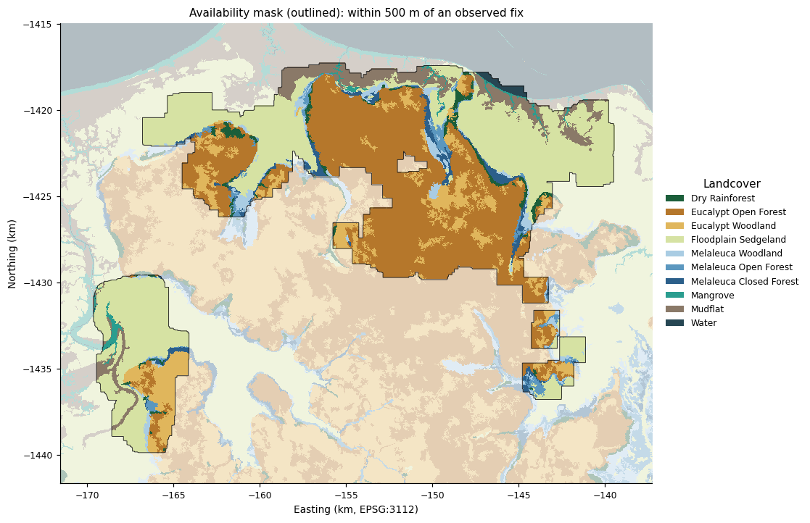
Habitat predictions restricted to the mask
From here on, surfaces come from a HabitatLandscapePredictor over the mask, and selection() turns natural-unit scenarios into log SR per class.
Show code
mask_predictor = deepssf.HabitatLandscapePredictor( model, landscape, n_scalars=len(SCALAR_COLS), mask=avail_mask)# Class rasters cropped to the predictor's grid, on the device, for class_selectionclass_crop = torch.from_numpy( class_rasters[:, mask_predictor.row_slice, mask_predictor.col_slice]).to(DEVICE)print(f"Predictor grid {mask_predictor.shape} (bounding box of the mask + edge buffer), "f"{mask_predictor.valid.sum():,} valid cells, batches of {mask_predictor.batch_size()}")def selection(natural_rows, scenario_ids=None):"""Long DataFrame of use / availability / log SR per scenario and class.""" encoded = encoder.encode(natural_rows) surfaces = mask_predictor.predict(encoded, as_numpy=False)return deepssf.class_selection(surfaces, class_crop, CLASS_NAMES, scenario_ids=scenario_ids)def selection_wide(encoded, value="log_sr"):"""Encoded rows [B, S] -> DataFrame [B, classes] of one class_selection column.""" surfaces = mask_predictor.predict(encoded, as_numpy=False) df = deepssf.class_selection(surfaces, class_crop, CLASS_NAMES)return df.pivot(index="scenario", columns="class", values=value)[CLASS_NAMES]
Predictor grid (1142, 1521) (bounding box of the mask + edge buffer), 646,329 valid cells, batches of 6
Reference scenarios
Typical weather at four times of day on day 200 (mid-July, dry season). “Typical” is a real observed half-hour whose weather is closest to the median of every weather variable (in SD units), so temperature, humidity, dew point and wet bulb are mutually consistent; its wind direction is used too.
Show code
weather_median = step_df[WEATHER_COLS].median()z_dist = ((step_df[WEATHER_COLS] - weather_median) / step_df[WEATHER_COLS].std()).pow(2).sum(axis=1)typical_row = step_df.loc[z_dist.idxmin()]TYPICAL_WEATHER = typical_row[WEATHER_COLS + [WIND_DIR_COL]].astype(float).to_dict()print(f"Typical weather: step {z_dist.idxmin()} ({typical_row['t1_']:%Y-%m-%d %H:%M})")print(pd.DataFrame({"median": weather_median, "typical row": typical_row[WEATHER_COLS]}) .astype(float).round(2).to_string())print(f"Wind direction: {TYPICAL_WEATHER[WIND_DIR_COL]:g}°")REFERENCE_HOURS = [3, 9, 15, 21]reference_rows = pd.DataFrame([ {"hour_t1": h, "yday_t1": 200, "dt_hour": 0.5, **TYPICAL_WEATHER} for h in REFERENCE_HOURS])print("Out of range:", encoder.check_ranges(reference_rows) or"none")reference_sel = selection(reference_rows, scenario_ids=[f"{h:02d}:00"for h in REFERENCE_HOURS])reference_sel["label"] = reference_sel["class"].map(CLASS_LABELS)reference_sel.to_csv(STAGE2_DIR /"reference_scenarios_log_sr.csv", index=False)print("\nlog SR by class and hour (day 200, typical weather):")print(reference_sel.pivot(index="label", columns="scenario", values="log_sr") .loc[[CLASS_LABELS[c] for c in CLASS_ORDER]].round(2).to_string())
fig, axes = plt.subplots(1, len(REFERENCE_HOURS), figsize=(12, 3.8), sharey=True, sharex=True)for ax, (hour_label, sub) inzip(axes, reference_sel.groupby("scenario", sort=False)): sub = sub.set_index("class").loc[PLOT_CLASSES[::-1]] ax.barh([CLASS_LABELS[c] for c in sub.index], sub["log_sr"], color=[CLASS_COLOURS[c] for c in sub.index], height=0.7, edgecolor="white", linewidth=0.5) ax.axvline(0, color="#444444", lw=0.8) ax.set(title=hour_label, xlabel="log selection ratio") ax.grid(axis="y", visible=False)fig.suptitle("Habitat selection by landcover class: day 200, typical weather ""(0 = used in proportion to availability)", fontsize=10)fig.tight_layout()fig.savefig(STAGE2_DIR /"reference_scenarios_log_sr.png")plt.show()
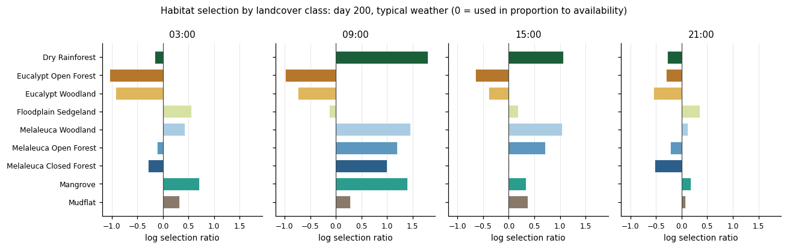
Model vs empirical selection
A sanity check against the data. Empirically, use is the share of fixes in each class and availability is the class’s share of the mask. Model use is averaged over a fixed-seed sample of 500 observed steps’ own scalar inputs (time and weather), and log SR is computed from that average use.
The two are not expected to agree exactly. The habitat surface ranks every masked cell as if it were reachable, while real fixes are also shaped by movement (each fix is close to the previous one) and by where each pig’s home range is. But the ordering of the classes should match: dry rainforest selected, water and mudflat avoided.
Show code
N_EMPIRICAL_SCENARIOS =500empirical_sample = step_df.sample(N_EMPIRICAL_SCENARIOS, random_state=2026)sample_sel = selection(empirical_sample, scenario_ids=empirical_sample.index)mask_avail = availability_table.set_index("class")["mask_share"]comparison = pd.DataFrame({"label": [CLASS_LABELS[c] for c in CLASS_ORDER],"availability": mask_avail.loc[CLASS_ORDER].to_numpy(),"empirical_use": availability_table.set_index("class").loc[CLASS_ORDER, "fix_share"].to_numpy(),"model_use": sample_sel.groupby("class")["use"].mean().loc[CLASS_ORDER].to_numpy(),"model_mean_log_sr": sample_sel.groupby("class")["log_sr"].mean().loc[CLASS_ORDER].to_numpy(),}, index=pd.Index(CLASS_ORDER, name="class"))with np.errstate(divide="ignore"): # water has no fixes: log(0) = -inf, by design comparison["empirical_log_sr"] = np.log(comparison["empirical_use"] / comparison["availability"])comparison["model_log_sr"] = np.log(comparison["model_use"] / comparison["availability"])comparison.to_csv(STAGE2_DIR /"model_vs_empirical_log_sr.csv")sample_sel.to_csv(STAGE2_DIR /"observed_scenarios_log_sr.csv", index=False)print(comparison.round(3).to_string())plot_df = comparison.loc[PLOT_CLASSES]r = np.corrcoef(plot_df["empirical_log_sr"], plot_df["model_log_sr"])[0, 1]print(f"\nCorrelation of log SR, model vs empirical (water excluded): {r:.2f}")
fig, ax = plt.subplots(figsize=(6.2, 5.6))lims = [min(plot_df[["empirical_log_sr", "model_log_sr"]].min()) -0.3,max(plot_df[["empirical_log_sr", "model_log_sr"]].max()) +0.3]ax.plot(lims, lims, color="#888888", lw=0.8, ls="--", label="1:1")ax.axhline(0, color="#bbbbbb", lw=0.6)ax.axvline(0, color="#bbbbbb", lw=0.6)for c, row in plot_df.iterrows(): ax.scatter(row["empirical_log_sr"], row["model_log_sr"], s=70, color=CLASS_COLOURS[c], edgecolor="white", linewidth=1.5, zorder=3) ax.annotate(CLASS_LABELS[c], (row["empirical_log_sr"], row["model_log_sr"]), xytext=(6, 4), textcoords="offset points", fontsize=8, color="#333333")ax.set(xlim=lims, ylim=lims, xlabel="Empirical log SR (share of fixes / availability)", ylabel="Model log SR (habitat surface, mean over 500 observed scenarios)", title=f"Model vs empirical selection by class (r = {r:.2f}; water omitted)")ax.set_aspect("equal")ax.legend(loc="upper left")fig.savefig(STAGE2_DIR /"model_vs_empirical_log_sr.png")plt.show()
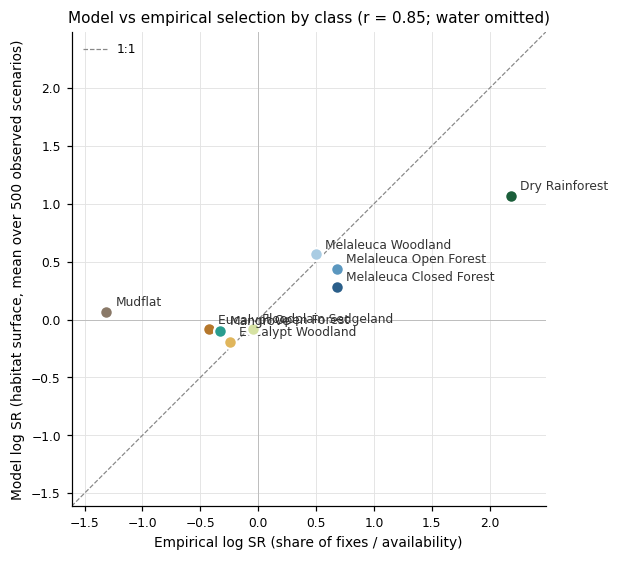
What this shows
The model ranks the classes much as the data do (r ≈ 0.8 across the nine classes plotted). Dry rainforest is the most strongly selected class in both, the melaleuca classes are selected, and mangrove is avoided. Water, left off the plot, is avoided by the model (log SR ≈ −1.4) and has no fixes.
The model is less extreme than the data. Dry rainforest’s empirical log SR (≈ 2.1) is far above the model’s (≈ 0.8). The share of fixes measures where pigs spend time, which includes long resting bouts in dense cover and is shaped by movement. The habitat surface ranks single cells as if all were reachable.
Mudflat is the exception. The pigs rarely use it (log SR ≈ −1.2), but the habitat surface is close to neutral on average and selects it in the daytime reference scenarios. Most masked mudflat is at the northern coastal margin; the joint model (habitat + movement) in the movement section is the place to check whether the next-step probabilities of entering it are lower.
There is a strong diel pattern in the reference scenarios. At 09:00 and 15:00 the eucalypt classes are avoided, and melaleuca woodland, mangrove and mudflat are selected. At night (03:00, 21:00) selection is much flatter. The partial dependence plots below separate this effect of the clock from the weather that comes with it.
Habitat partial dependence: time and weather
How does selection of each landcover class change with the time of day, the time of year and the weather? The metric is log SR per class over the availability mask, as above. Three complementary views are used, because time and the weather variables are correlated with each other (nights are cooler and more humid, the wet season is hotter and wetter):
Partial dependence (PDP) with individual conditional expectation (ICE) curves. Take a fixed sample of 50 observed half-hours (one from each month × 3-hour block, then 50 of those at random). Set one variable to each value on a grid while keeping everything else as observed, and average the result. Each grey ICE curve is one base row; the coloured PDP is their mean. This is the pure effect of the variable. For the hour of day it is the “clock” effect at the base rows’ own weather. Linked weather variables are changed consistently: air temperature at a fixed dew point, humidity at a fixed temperature, or both together along the “heat-stress” axis.
Accumulated local effects (ALE) for the four thermal variables. Each observed row is moved only across its own quantile bin, so the model is never fed combinations of temperature and humidity far from what was observed. The local differences are accumulated and centred on zero.
Binned observed-condition averages (M-plots). The model’s output at the conditions actually observed, averaged within bins of one variable, with no changes. This mixes the variable’s effect with everything correlated with it (e.g. the typical diel cycle of weather), which is what makes it comparable to the empirical binned plots.
dt_hour is fixed at 0.5 h in the PDP base rows. Grey bands mark grid values where more than a quarter of the modified rows are outside the training range of some input.
The calculations take ~15 minutes on the GPU, so the results are cached as CSVs in INFERENCE_DIR / "stage3". A cached result is reused only if its settings (grid, base rows, encoder, checkpoint) are unchanged; set RECOMPUTE = True to force a rerun.
Show code
import hashlibimport matplotlib.patheffects as peSTAGE3_DIR = INFERENCE_DIR /"stage3"STAGE3_DIR.mkdir(parents=True, exist_ok=True)RECOMPUTE =False# True: ignore cached results and recompute everythingN_ICE =50# ICE base rows for the 1-D PDPsN_ICE_2D =20# base rows for the 2-D PDPsN_ALE =800# observed rows for ALEN_MPLOT =3000# observed rows for the binned averagesN_H =20# rows for Friedman's H (costs 3 * N_H² maps per pair)PD_BATCH =36# scenarios per metric callCHECKPOINT_ID =f"{CKPT_PATH.stat().st_size}-{CKPT_PATH.stat().st_mtime_ns}"ENCODER_ID = hashlib.sha1(encoder.to_json().encode()).hexdigest()[:12]COMPUTE_LOG = []def cached(name, key, compute, n_maps, directory=None, unit="maps"):"""Load `name` from `directory` if computed with the same `key`, else compute it. `compute()` returns {part: DataFrame}; each part is saved as `<name>__<part>.csv` in `directory` (default STAGE3_DIR). `n_maps` (the units of work, e.g. habitat surfaces) goes in COMPUTE_LOG. """ directory = STAGE3_DIR if directory isNoneelse directory key = {**key, "checkpoint": CHECKPOINT_ID, "encoder": ENCODER_ID} key_text = json.dumps(key, sort_keys=True, default=str) key_path = directory /f"{name}.key.json"ifnot RECOMPUTE and key_path.exists() and key_path.read_text() == key_text: files =sorted(directory.glob(f"{name}__*.csv"))if files: COMPUTE_LOG.append({"name": name, "maps": n_maps, "unit": unit, "seconds": np.nan,"cached": True})return {f.stem.split("__", 1)[1]: pd.read_csv(f) for f in files} t0 = time.perf_counter() result = compute() elapsed = time.perf_counter() - t0for part, df in result.items(): df.to_csv(directory /f"{name}__{part}.csv", index=False) key_path.write_text(key_text) COMPUTE_LOG.append({"name": name, "maps": n_maps, "unit": unit, "seconds": elapsed,"cached": False})print(f" {name}: {n_maps:,}{unit} in {elapsed:.0f} s "f"({elapsed / n_maps *1000:.1f} ms each)")return resultdef log_sr_metric(encoded):"""Encoded scalar rows [B, S] -> log SR per class [B, K] over the availability mask."""return selection_wide(encoded, "log_sr")
Base rows and consistent weather changes
Show code
# ICE base rows: one observed half-hour from each month × 3-hour block (96 strata),# then N_ICE of those, so the base covers the seasons and the day evenlystrata = step_df.assign(month=step_df["t1_"].dt.month, block=(step_df["hour_t1"] //3).astype(int))one_per_stratum = strata.groupby(["month", "block"]).sample(1, random_state=1)ice_base = one_per_stratum.sample(N_ICE, random_state=2)[encoder.inputs].assign(dt_hour=0.5)ice_base_2d = ice_base.sample(N_ICE_2D, random_state=3)ice_base_windy = ice_base[ice_base["onpli_wind_speed_kmh"] >0] # for wind directionprint(f"ICE base: {len(ice_base)} rows from {len(one_per_stratum)} strata "f"({len(ice_base_windy)} not calm); 2-D base: {len(ice_base_2d)} rows")# Observed values for the rugsrug_sample = step_df.sample(3000, random_state=6)# The heat-stress axis: typical air temperature at each wet bulb (observed medians)HEAT_PATH = wx.heat_stress_path(step_df)def set_air_temp(rows, value):return wx.set_temp_fixed_dew_point(rows, value, WET_BULB_CORRECTION)def set_rh(rows, value):return wx.set_rh_fixed_temp(rows, value, WET_BULB_CORRECTION)def set_heat_stress(rows, value):return wx.set_heat_stress(rows, value, HEAT_PATH, WET_BULB_CORRECTION)print("\nHeat-stress axis (each wet bulb with its typical temperature and humidity):")print(set_heat_stress(pd.concat([ice_base.iloc[:1]] *6, ignore_index=True), np.arange(14, 29.1, 3)) [["onpli_wet_bulb_temp_c", "onpli_air_temp_c", "onpli_rel_humidity_pct","onpli_dew_point_temp_c"]].round(1).to_string(index=False))# Median sunrise and sunset (Darwin time) for the hour plotssun = pd.read_csv(CSV_PATH, usecols=["sunrise", "sunset"])SUNRISE_H, SUNSET_H = ( pd.to_datetime(sun[c], utc=True).dt.tz_convert("Australia/Darwin") .pipe(lambda s: s.dt.hour + s.dt.minute /60).median()for c in ("sunrise", "sunset"))print(f"\nMedian sunrise {SUNRISE_H:.2f} h, sunset {SUNSET_H:.2f} h (±~0.5 h over the year)")
ICE base: 50 rows from 96 strata (39 not calm); 2-D base: 20 rows
Heat-stress axis (each wet bulb with its typical temperature and humidity):
onpli_wet_bulb_temp_c onpli_air_temp_c onpli_rel_humidity_pct onpli_dew_point_temp_c
14.0 20.4 45.6 8.3
17.0 20.4 69.2 14.6
20.0 25.1 60.3 16.9
23.0 26.9 70.7 21.1
26.0 27.8 85.9 25.3
29.0 31.7 81.6 28.2
Median sunrise 6.60 h, sunset 18.65 h (±~0.5 h over the year)
1-D partial dependence and ICE
Show code
MONTH_MID_DAYS = [15, 46, 74, 105, 135, 166, 196, 227, 258, 288, 319, 349]PDP_SPECS = {"hour": dict(set_fn="hour_t1", grid=np.arange(0, 23.51, 0.5), xlabel="Hour of day (Darwin time)", rug="hour_t1"),"yday": dict(set_fn="yday_t1", grid=MONTH_MID_DAYS, xlabel="Day of year (mid-month)", rug="yday_t1"),"rain": dict(set_fn="onpli_rain_30min_mm", grid=[0, 0.2, 0.4, 1, 2, 4, 8, 15, 25, 34], xlabel="Rain in the previous 30 min (mm)", rug="onpli_rain_30min_mm"),"wind_speed": dict(set_fn="onpli_wind_speed_kmh", grid=np.arange(0, 37.6, 2.5), xlabel="Wind speed (km/h; 0 = calm)", rug="onpli_wind_speed_kmh"),"wind_dir": dict(set_fn=WIND_DIR_COL, grid=np.arange(0, 360, 10), base=ice_base_windy, xlabel="Wind direction (° from north, blowing from)", rug=WIND_DIR_COL),"air_temp_fixed_dew": dict(set_fn=set_air_temp, grid=np.arange(12, 39.6, 1.5), xlabel="Air temp. (°C), fixed dew point", rug="onpli_air_temp_c"),"rh_fixed_temp": dict(set_fn=set_rh, grid=np.arange(15, 99, 5), xlabel="RH (%), fixed temperature", rug="onpli_rel_humidity_pct"),"heat_stress": dict(set_fn=set_heat_stress, grid=np.arange(12, 29.6, 1), xlabel="Heat stress: wet bulb (°C)", rug="onpli_wet_bulb_temp_c"),}print("Computing (or loading) 1-D partial dependence:")pdp_results = {}for name, spec in PDP_SPECS.items(): base = spec.get("base", ice_base) grid = np.asarray(spec["grid"], dtype=float) pdp_results[name] = cached(f"pdp_{name}", {"grid": grid.tolist(), "base": base.index.tolist(), "set_fn": str(spec["set_fn"])},lambda: dict(zip(("pd", "ice"), deepssf.partial_dependence( log_sr_metric, base, spec["set_fn"], grid, encoder, batch_size=PD_BATCH, grid_name="value"))), n_maps=len(grid) *len(base), )# Calm: wind direction is irrelevant when there is no windcalm_result = cached("pdp_wind_calm", {"base": ice_base_windy.index.tolist()},lambda: {"pd": log_sr_metric(encoder.encode( ice_base_windy.assign(onpli_wind_speed_kmh=0.0))).mean().rename("pd") .rename_axis("metric").reset_index()}, n_maps=len(ice_base_windy),)CALM_LOG_SR = calm_result["pd"].set_index("metric")["pd"]
Computing (or loading) 1-D partial dependence:
pdp_hour: 2,400 maps in 43 s (18.1 ms each)
pdp_yday: 600 maps in 11 s (17.9 ms each)
pdp_rain: 500 maps in 9 s (18.1 ms each)
pdp_wind_speed: 800 maps in 14 s (18.0 ms each)
pdp_wind_dir: 1,404 maps in 25 s (17.9 ms each)
pdp_air_temp_fixed_dew: 950 maps in 17 s (18.1 ms each)
pdp_rh_fixed_temp: 850 maps in 15 s (18.1 ms each)
pdp_heat_stress: 900 maps in 17 s (18.5 ms each)
pdp_wind_calm: 39 maps in 1 s (18.4 ms each)
Show code
def class_grid(n=len(PLOT_CLASSES), ncols=3, height=2.4, width=3.6): nrows =int(np.ceil(n / ncols)) fig, axes = plt.subplots(nrows, ncols, figsize=(width * ncols, height * nrows), sharex=True, sharey=True, squeeze=False)return fig, axes.ravel()def class_line(ax, x, y, cls, **kw):"""A class-coloured line with a thin dark outline, so pale colours stay visible.""" ax.plot(x, y, color=CLASS_COLOURS[cls], lw=2, zorder=4, path_effects=[pe.Stroke(linewidth=3.2, foreground="#4d4d4d"), pe.Normal()], **kw)def plot_pdp(name, title): spec = PDP_SPECS[name] res = pdp_results[name] pd_df, ice_df = res["pd"], res["ice"]if name =="hour": # close the daily cycle: 24:00 is 00:00 pd_df = pd.concat([pd_df, pd_df[pd_df["value"] ==0].assign(value=24.0)]) ice_df = pd.concat([ice_df, ice_df[ice_df["value"] ==0].assign(value=24.0)]) fig, axes = class_grid() grid_vals = np.sort(pd_df["value"].unique()) step = np.median(np.diff(grid_vals)) iflen(grid_vals) >1else1 oor = pd_df.groupby("value")["frac_out_of_range"].first() rug = rug_sample[spec["rug"]].dropna().to_numpy()for ax, cls inzip(axes, PLOT_CLASSES):for v in oor.index[oor >0.25]: ax.axvspan(v - step /2, v + step /2, color="#efefef", lw=0, zorder=0) ice = ice_df[ice_df["metric"] == cls]for _, curve in ice.groupby("ice_id"): ax.plot(curve["value"], curve["ice"], color="#9a9a9a", lw=0.5, alpha=0.35, zorder=2) sub = pd_df[pd_df["metric"] == cls] class_line(ax, sub["value"], sub["pd"], cls) ax.axhline(0, color="#555555", lw=0.7, zorder=3) ax.plot(rug, np.zeros_like(rug), "|", transform=ax.get_xaxis_transform(), color="#7a7a7a", ms=5, alpha=0.15, zorder=1)if name =="hour":for h in (SUNRISE_H, SUNSET_H): ax.axvline(h, color="#d08c00", lw=0.9, ls=":", zorder=3)if name =="wind_dir": ax.axhline(CALM_LOG_SR[cls], color=CLASS_COLOURS[cls], lw=1.2, ls="--", zorder=3, path_effects=[pe.Stroke(linewidth=2.2, foreground="#4d4d4d"), pe.Normal()]) ax.text(355, CALM_LOG_SR[cls], " calm", va="center", fontsize=7, color="#333333") ax.set_title(CLASS_LABELS[cls])for ax in axes[len(PLOT_CLASSES):]: ax.set_visible(False)for ax in axes[-3:]: ax.set_xlabel(spec["xlabel"])for ax in axes[::3]: ax.set_ylabel("log SR") extra =" Dotted lines: median sunrise and sunset."if name =="hour"else"" fig.suptitle(f"{title}\nPDP (coloured) and ICE curves (grey, one per base row); "f"rug: observed values.{extra}", fontsize=10) fig.tight_layout() fig.savefig(STAGE3_DIR /f"pdp_{name}.png") plt.show()
Show code
plot_pdp("hour", "Hour of day: the pure clock effect, at each base row's own weather")
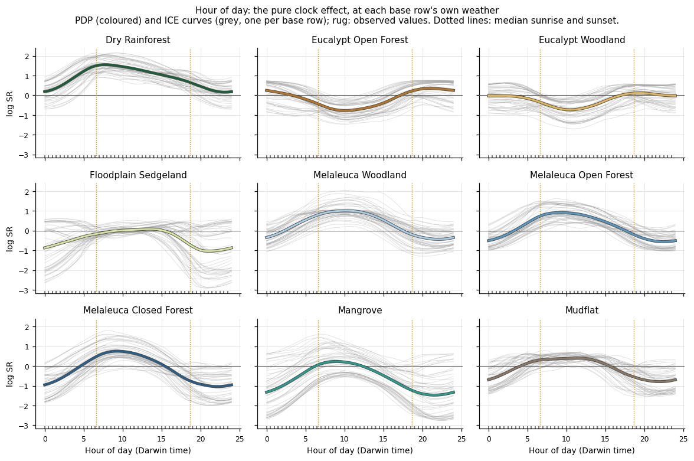
Show code
plot_pdp("yday", "Day of year, at each base row's own hour and weather")
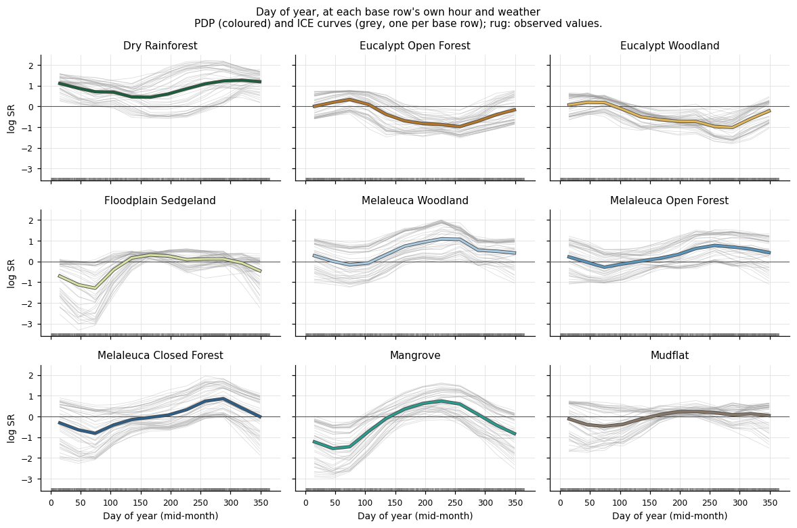
Show code
plot_pdp("rain", "Rain in the previous 30 minutes")
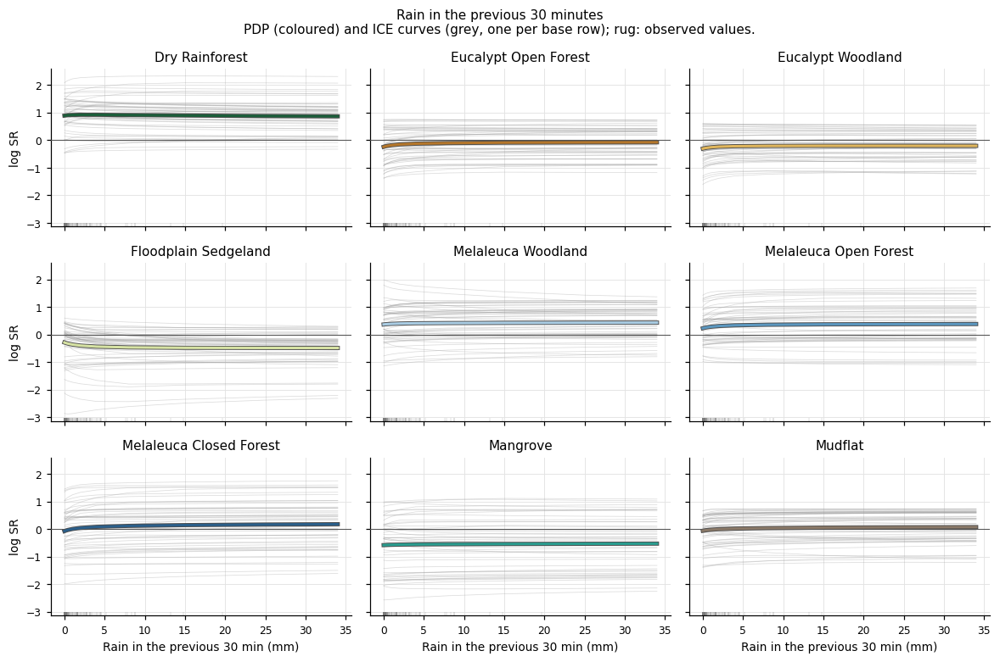
Show code
plot_pdp("wind_speed", "Wind speed (direction as observed; 0 = calm)")
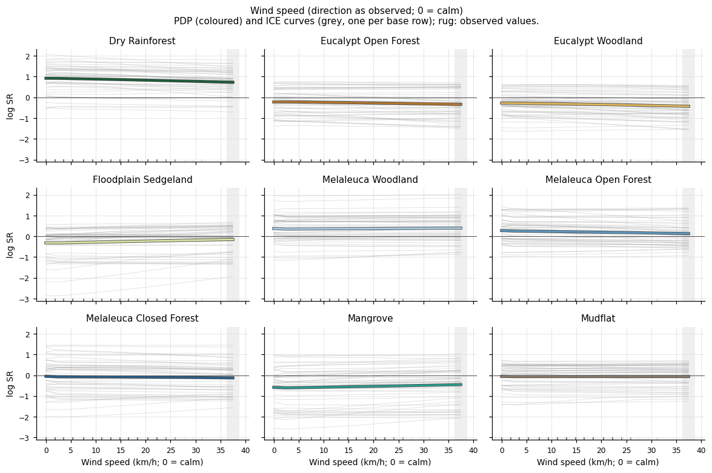
Show code
plot_pdp("wind_dir", "Wind direction (base rows that were not calm; dashed: the same rows made calm)")
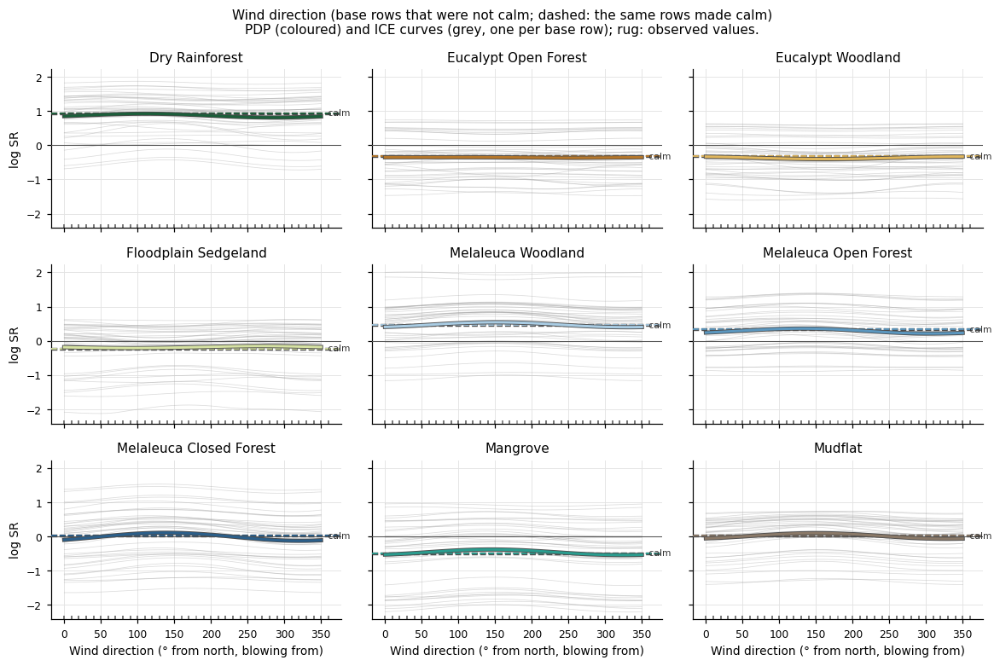
Show code
plot_pdp("air_temp_fixed_dew", "Air temperature at a fixed dew point (RH and wet bulb follow)")
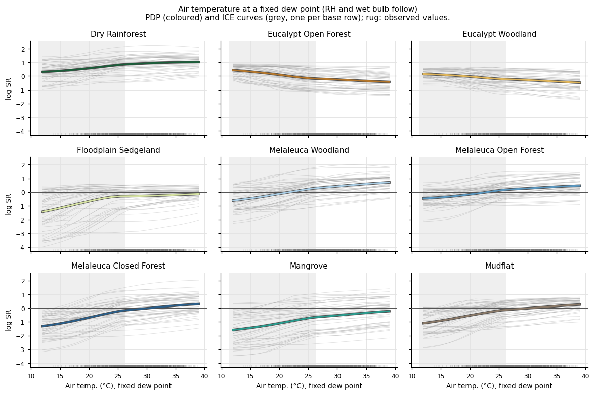
Show code
plot_pdp("rh_fixed_temp", "Relative humidity at a fixed air temperature (dew point and wet bulb follow)")
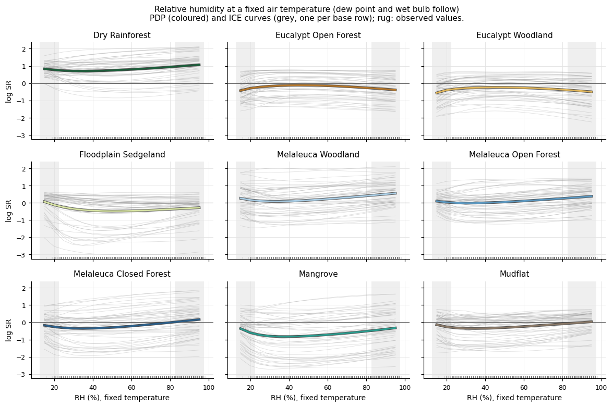
Show code
plot_pdp("heat_stress", "Heat stress: temperature and humidity moving together along the observed wet bulb relationship")
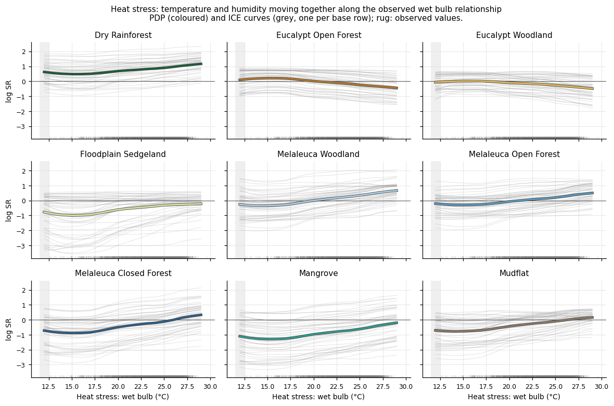
Accumulated local effects of the thermal variables
Each variable is changed alone, but each row only across its own quantile bin, so the changes stay close to physically consistent weather. The curves are centred; read them as changes in log SR across the variable’s observed range.
Show code
ALE_VARS = {"onpli_air_temp_c": "Air temperature (°C)","onpli_wet_bulb_temp_c": "Wet bulb (°C)","onpli_dew_point_temp_c": "Dew point (°C)","onpli_rel_humidity_pct": "Relative humidity (%)",}ale_rows = step_df.sample(N_ALE, random_state=4)[encoder.inputs]print("Computing (or loading) ALE:")ale_results = { var: cached(f"ale_{var}", {"rows": ale_rows.index.tolist(), "n_bins": 10},lambda: {"ale": deepssf.accumulated_local_effects( log_sr_metric, ale_rows, var, None, encoder, n_bins=10, batch_size=PD_BATCH)}, n_maps=2*len(ale_rows), )["ale"]for var in ALE_VARS}fig, axes = plt.subplots(1, 4, figsize=(15, 3.8), sharey=True)for ax, (var, label) inzip(axes, ALE_VARS.items()): ale = ale_results[var]for cls in PLOT_CLASSES: sub = ale[ale["metric"] == cls] class_line(ax, sub[var], sub["ale"], cls, label=CLASS_LABELS[cls]) ax.axhline(0, color="#555555", lw=0.7) ax.set(xlabel=label, title=label.split(" (")[0])axes[0].set_ylabel("ALE (change in log SR, centred)")axes[-1].legend(loc="center left", bbox_to_anchor=(1.02, 0.5), title="Class")fig.suptitle("Accumulated local effects of the thermal variables (observed rows only)", fontsize=10)fig.tight_layout()fig.savefig(STAGE3_DIR /"ale_thermal.png")plt.show()
Computing (or loading) ALE:
ale_onpli_air_temp_c: 1,600 maps in 30 s (18.6 ms each)
ale_onpli_wet_bulb_temp_c: 1,600 maps in 30 s (18.6 ms each)
ale_onpli_dew_point_temp_c: 1,600 maps in 31 s (19.2 ms each)
ale_onpli_rel_humidity_pct: 1,600 maps in 29 s (18.3 ms each)
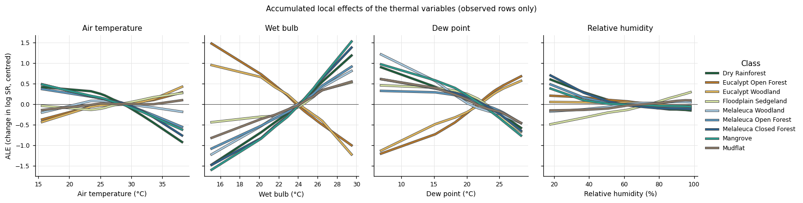
Observed-condition averages (M-plots), comparable to the empirical plots
The model’s log SR at 3,000 observed half-hours, averaged within bins of each variable. The bins follow bin_weather() in the empirical weather analysis: 10 quantile bins, a separate bin for zeros when more than 10 % of values are zero (rain, calm wind), and bins of 50 or fewer rows dropped. The hour plot uses 24 bins. These are not partial dependence plots: each bin carries the weather, season and time of day that came with it. The hour plot is the typical diel cycle, including the typical weather at each hour.
Show code
mplot_rows = step_df.sample(N_MPLOT, random_state=5)mplot_metrics = cached("mplot_metrics", {"rows": mplot_rows.index.tolist()},lambda: {"log_sr": pd.DataFrame( np.concatenate([log_sr_metric(encoder.encode(mplot_rows.iloc[i:i + PD_BATCH])).to_numpy()for i inrange(0, len(mplot_rows), PD_BATCH)]), columns=CLASS_NAMES)}, n_maps=len(mplot_rows),)["log_sr"][CLASS_NAMES]MPLOT_VARS = {"hour_t1": ("Hour of day", 24),"onpli_rain_30min_mm": ("Rain, 30 min (mm)", 10),"onpli_air_temp_c": ("Air temperature (°C)", 10),"onpli_wet_bulb_temp_c": ("Wet bulb (°C)", 10),"onpli_dew_point_temp_c": ("Dew point (°C)", 10),"onpli_rel_humidity_pct": ("Relative humidity (%)", 10),"onpli_wind_speed_kmh": ("Wind speed (km/h)", 10), WIND_DIR_COL: ("Wind direction (°; 0 = calm)", 10),}mplots = { var: deepssf.binned_average(None, mplot_rows, var, encoder, n_bins=n_bins, metrics=mplot_metrics)for var, (_, n_bins) in MPLOT_VARS.items()}pd.concat([m.assign(variable=v) for v, m in mplots.items()]).to_csv( STAGE3_DIR /"mplots.csv", index=False)fig, axes = plt.subplots(2, 4, figsize=(15, 7), sharey=True)for ax, (var, (label, _)) inzip(axes.ravel(), MPLOT_VARS.items()): m = mplots[var]for cls in PLOT_CLASSES: sub = m[m["metric"] == cls] class_line(ax, sub["x_median"], sub["mean"], cls, label=CLASS_LABELS[cls], marker="o", ms=3) ax.axhline(0, color="#555555", lw=0.7)if var =="hour_t1":for h in (SUNRISE_H, SUNSET_H): ax.axvline(h, color="#d08c00", lw=0.9, ls=":") ax.set(xlabel=f"{label} (bin median)")for ax in axes[:, 0]: ax.set_ylabel("Mean log SR")axes[0, -1].legend(loc="center left", bbox_to_anchor=(1.02, 0.5), title="Class")fig.suptitle("Observed-condition averages (M-plots): model log SR averaged over observed ""half-hours in each bin; comparable to the empirical plots", fontsize=10)fig.tight_layout()fig.savefig(STAGE3_DIR /"mplots.png")plt.show()
mplot_metrics: 3,000 maps in 54 s (17.8 ms each)
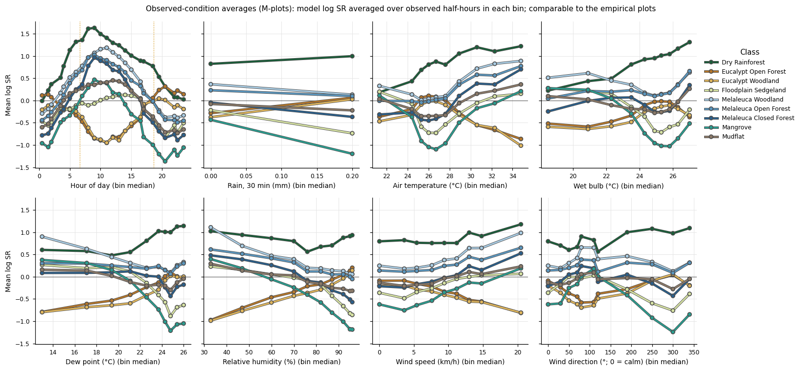
2-D partial dependence
How the diel pattern itself changes with heat stress, the season and rain. Each cell is the mean log SR over 20 base rows with both variables set. The colour scale is diverging and centred on 0 (blue = selected, red = avoided), and is shared across classes within a figure.
Show code
from matplotlib.colors import TwoSlopeNormHOURS_2D = np.arange(0, 23, 2.0)PDP2_SPECS = {"hour_x_heat_stress": dict( other="wet_bulb", values=[16, 18, 20, 22, 23.5, 25, 26.5, 28], set_fn=lambda r, v: set_heat_stress(r.assign(hour_t1=v["hour_t1"]), v["wet_bulb"]), ylabel="Heat stress: wet bulb (°C)"),"hour_x_yday": dict( other="yday_t1", values=MONTH_MID_DAYS, set_fn=lambda r, v: r.assign(hour_t1=v["hour_t1"], yday_t1=v["yday_t1"]), ylabel="Day of year (mid-month)"),"hour_x_rain": dict( other="onpli_rain_30min_mm", values=[0, 0.4, 2, 8, 25], set_fn=lambda r, v: r.assign(hour_t1=v["hour_t1"], onpli_rain_30min_mm=v["onpli_rain_30min_mm"]), ylabel="Rain, 30 min (mm)"),}print("Computing (or loading) 2-D partial dependence:")pdp2_results = {}for name, spec in PDP2_SPECS.items(): grid2 = pd.DataFrame([(h, o) for o in spec["values"] for h in HOURS_2D], columns=["hour_t1", spec["other"]]) pdp2_results[name] = cached(f"pdp2_{name}", {"grid": grid2.values.tolist(), "base": ice_base_2d.index.tolist()},lambda: {"pd": deepssf.partial_dependence( log_sr_metric, ice_base_2d, spec["set_fn"], grid2, encoder, batch_size=PD_BATCH)[0]}, n_maps=len(grid2) *len(ice_base_2d), )["pd"]for name, spec in PDP2_SPECS.items(): res = pdp2_results[name] res = res[res["metric"].isin(PLOT_CLASSES)] lim = np.nanpercentile(np.abs(res["pd"]), 99) norm = TwoSlopeNorm(vcenter=0, vmin=-lim, vmax=lim) fig, axes = class_grid(height=2.6)for ax, cls inzip(axes, PLOT_CLASSES): sub = res[res["metric"] == cls].pivot(index=spec["other"], columns="hour_t1", values="pd") mesh = ax.pcolormesh(np.arange(len(sub.columns) +1), np.arange(len(sub.index) +1), sub.to_numpy(), cmap="RdBu", norm=norm, shading="flat") ax.set_xticks(np.arange(len(sub.columns))[::2] +0.5, [f"{h:g}"for h in sub.columns[::2]]) ax.set_yticks(np.arange(len(sub.index)) +0.5, [f"{v:g}"for v in sub.index]) ax.set_title(CLASS_LABELS[cls]) ax.grid(False)for ax in axes[-3:]: ax.set_xlabel("Hour of day")for ax in axes[::3]: ax.set_ylabel(spec["ylabel"]) fig.colorbar(mesh, ax=axes.tolist(), shrink=0.6, label="log SR (blue = selected)") fig.suptitle(f"2-D partial dependence: hour × {spec['ylabel'].split(':')[0].lower()}", fontsize=10) fig.savefig(STAGE3_DIR /f"pdp2_{name}.png") plt.show()
Computing (or loading) 2-D partial dependence:
pdp2_hour_x_heat_stress: 1,920 maps in 35 s (18.0 ms each)
pdp2_hour_x_yday: 2,880 maps in 51 s (17.9 ms each)
pdp2_hour_x_rain: 1,200 maps in 22 s (18.0 ms each)
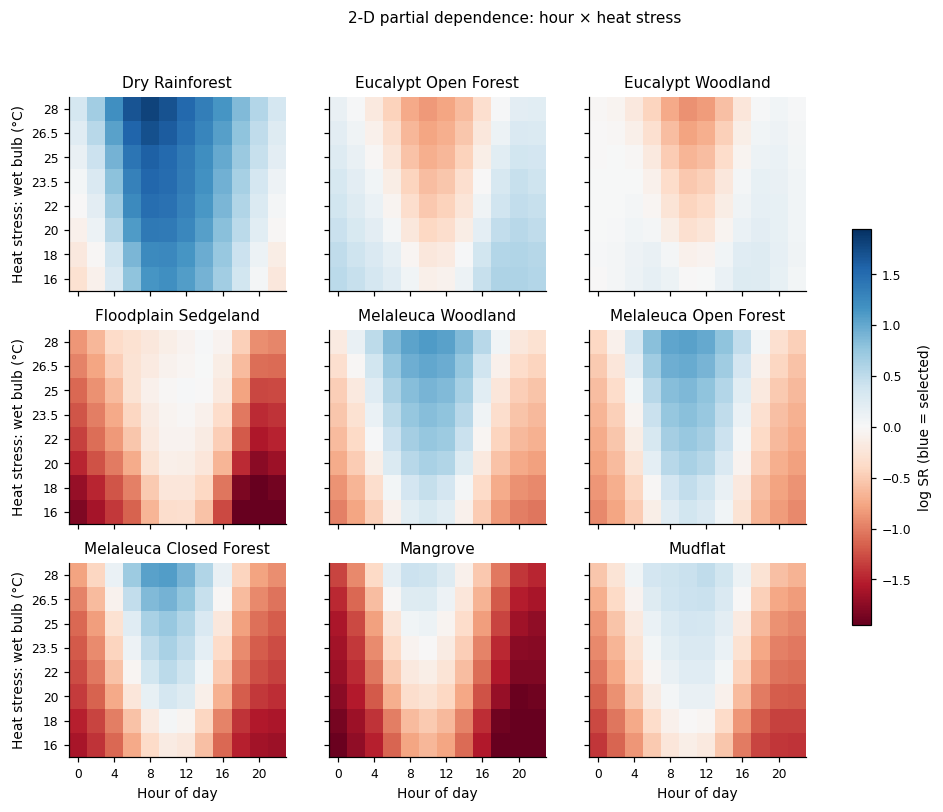
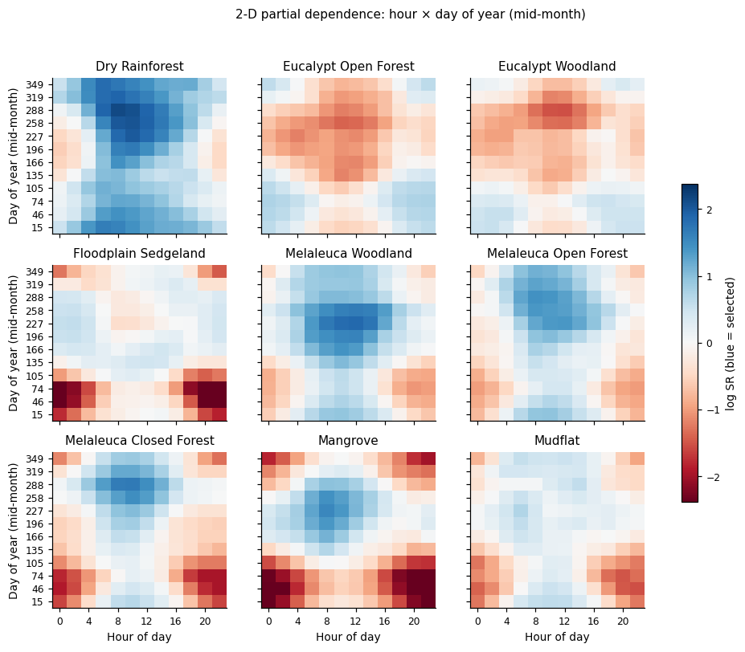
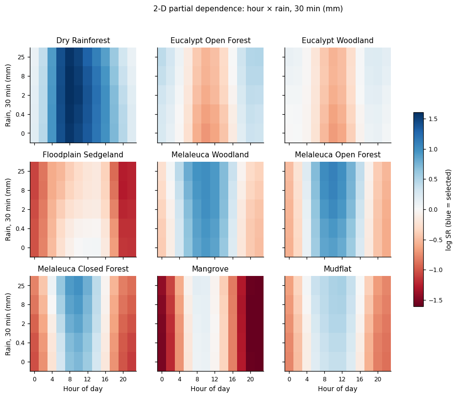
Interaction strength (Friedman’s H)
\(H^2\) is the share of the variance of the two-variable partial dependence that the two one-variable effects do not explain (0 = additive; values above ~0.2 are a substantial interaction). It is estimated from 20 base rows, so treat it as a rough ranking. H evaluates the partial dependence at the sample’s own values, and most half-hours are dry, so for hour × rain the sample is half raining and half dry rows (otherwise rain would barely vary in it).
Show code
h_base = ice_base.sample(N_H, random_state=7)raining = step_df["onpli_rain_30min_mm"] >0h_base_rain = pd.concat([ step_df[raining].sample(N_H //2, random_state=8), step_df[~raining].sample(N_H - N_H //2, random_state=9),])[encoder.inputs].assign(dt_hour=0.5)H_PAIRS = {"hour × heat stress": dict(var_b="onpli_wet_bulb_temp_c", set_fn_b=set_heat_stress, rows=h_base),"hour × day of year": dict(var_b="yday_t1", set_fn_b=None, rows=h_base),"hour × rain": dict(var_b="onpli_rain_30min_mm", set_fn_b=None, rows=h_base_rain),}print("Computing (or loading) H statistics:")h_tables = []for pair, spec in H_PAIRS.items(): h = cached(f"h_{spec['var_b']}", {"rows": spec["rows"].index.tolist()},lambda: {"h": deepssf.h_statistic( log_sr_metric, spec["rows"], encoder, "hour_t1", spec["var_b"], set_fn_b=spec["set_fn_b"], batch_size=PD_BATCH)}, n_maps=3* N_H**2, )["h"] h_tables.append(h.assign(pair=pair))h_table = pd.concat(h_tables)h_table.to_csv(STAGE3_DIR /"h_statistics.csv", index=False)print(h_table.assign(label=h_table["metric"].map(CLASS_LABELS)) .pivot(index="label", columns="pair", values="h") .loc[[CLASS_LABELS[c] for c in CLASS_ORDER]].round(2).to_string())
Computing (or loading) H statistics:
h_onpli_wet_bulb_temp_c: 1,200 maps in 22 s (18.2 ms each)
h_yday_t1: 1,200 maps in 22 s (18.0 ms each)
h_onpli_rain_30min_mm: 1,200 maps in 22 s (18.1 ms each)
pair hour × day of year hour × heat stress hour × rain
label
Dry Rainforest 0.37 0.17 0.06
Eucalypt Open Forest 0.20 0.08 0.04
Eucalypt Woodland 0.23 0.30 0.05
Floodplain Sedgeland 0.57 0.32 0.05
Melaleuca Woodland 0.11 0.08 0.03
Melaleuca Open Forest 0.13 0.07 0.05
Melaleuca Closed Forest 0.18 0.08 0.04
Mangrove 0.20 0.08 0.04
Mudflat 0.56 0.16 0.02
Water 0.45 0.21 0.16
Summary: the strongest effects
The range of each class’s PDP (max − min log SR over the grid, ignoring grid values where more than a quarter of rows are out of range): how much selection of the class moves as each variable moves across its grid, with everything else as observed.
Show code
pdp_all = pd.concat([res["pd"].assign(variable=name) for name, res in pdp_results.items()])pdp_all = pdp_all.rename(columns={"metric": "class"})pdp_all.to_csv(STAGE3_DIR /"pdp_all.csv", index=False)ice_all = pd.concat([res["ice"].assign(variable=name) for name, res in pdp_results.items()])ice_all.rename(columns={"metric": "class"}).to_csv(STAGE3_DIR /"ice_all.csv", index=False)in_range = pdp_all[pdp_all["frac_out_of_range"] <=0.25]pdp_range = (in_range.groupby(["class", "variable"])["pd"].agg(lambda s: s.max() - s.min()) .unstack("variable").loc[CLASS_ORDER, list(PDP_SPECS)])pdp_range.index = [CLASS_LABELS[c] for c in pdp_range.index]pdp_range.to_csv(STAGE3_DIR /"pdp_range_summary.csv")print("Range of the PDP (log SR) by class and variable:")print(pdp_range.round(2).to_string())print("\nStrongest effects per class (water omitted):")for cls in PLOT_CLASSES: top = pdp_range.loc[CLASS_LABELS[cls]].sort_values(ascending=False).head(3) sub = in_range[in_range["class"] == cls] parts = []for var, rng in top.items(): v = sub[sub["variable"] == var] hi_at, lo_at = v.loc[v["pd"].idxmax(), "value"], v.loc[v["pd"].idxmin(), "value"] parts.append(f"{var} ({rng:.2f}; highest at {hi_at:g}, lowest at {lo_at:g})")print(f"- {CLASS_LABELS[cls]}: "+"; ".join(parts))compute_log = pd.DataFrame(COMPUTE_LOG).query("unit == 'maps'")done = compute_log[~compute_log["cached"]]iflen(done):print(f"\nComputed this run: {done['maps'].sum():,} maps in {done['seconds'].sum() /60:.1f} min "f"({done['seconds'].sum() / done['maps'].sum() *1000:.0f} ms/map)")print(f"Total maps behind this section: {compute_log['maps'].sum():,}")
Range of the PDP (log SR) by class and variable:
variable hour yday rain wind_speed wind_dir air_temp_fixed_dew rh_fixed_temp heat_stress
Dry Rainforest 1.39 0.82 0.06 0.18 0.11 0.15 0.24 0.68
Eucalypt Open Forest 1.12 1.31 0.17 0.11 0.02 0.23 0.15 0.66
Eucalypt Woodland 0.85 1.21 0.10 0.14 0.07 0.24 0.13 0.51
Floodplain Sedgeland 1.12 1.60 0.20 0.16 0.06 0.16 0.23 0.78
Melaleuca Woodland 1.45 1.25 0.07 0.04 0.14 0.39 0.32 1.01
Melaleuca Open Forest 1.47 1.05 0.15 0.14 0.14 0.27 0.27 0.80
Melaleuca Closed Forest 1.79 1.67 0.25 0.07 0.23 0.42 0.35 1.22
Mangrove 1.71 2.29 0.05 0.14 0.16 0.41 0.31 1.08
Mudflat 1.20 0.71 0.13 0.01 0.17 0.36 0.27 0.93
Water 0.57 2.01 0.26 0.09 0.04 0.16 0.12 0.48
Strongest effects per class (water omitted):
- Dry Rainforest: hour (1.39; highest at 8, lowest at 23); yday (0.82; highest at 319, lowest at 166); heat_stress (0.68; highest at 29, lowest at 16)
- Eucalypt Open Forest: yday (1.31; highest at 74, lowest at 258); hour (1.12; highest at 20.5, lowest at 10); heat_stress (0.66; highest at 15, lowest at 29)
- Eucalypt Woodland: yday (1.21; highest at 46, lowest at 288); hour (0.85; highest at 19, lowest at 10.5); heat_stress (0.51; highest at 16, lowest at 29)
- Floodplain Sedgeland: yday (1.60; highest at 166, lowest at 74); hour (1.12; highest at 13.5, lowest at 21); heat_stress (0.78; highest at 29, lowest at 15)
- Melaleuca Woodland: hour (1.45; highest at 10, lowest at 22); yday (1.25; highest at 227, lowest at 74); heat_stress (1.01; highest at 29, lowest at 14)
- Melaleuca Open Forest: hour (1.47; highest at 9, lowest at 22.5); yday (1.05; highest at 258, lowest at 74); heat_stress (0.80; highest at 29, lowest at 15)
- Melaleuca Closed Forest: hour (1.79; highest at 9.5, lowest at 22); yday (1.67; highest at 288, lowest at 74); heat_stress (1.22; highest at 29, lowest at 15)
- Mangrove: yday (2.29; highest at 227, lowest at 46); hour (1.71; highest at 9, lowest at 21.5); heat_stress (1.08; highest at 29, lowest at 15)
- Mudflat: hour (1.20; highest at 11, lowest at 22); heat_stress (0.93; highest at 29, lowest at 14); yday (0.71; highest at 227, lowest at 74)
Computed this run: 27,443 maps in 8.3 min (18 ms/map)
Total maps behind this section: 27,443
What the partial dependence shows
Time matters more than weather. For every class, the day of year and the hour of day have the largest PDP ranges, about 0.7–2.5 log SR. The weather variables move selection by at most about 1 log SR, and most move it by much less. Permutation importance below checks this ranking for the model’s fit as a whole.
Diel cycle (the pure clock effect). Between about 08:00 and 14:00 the model selects dry rainforest, the melaleuca classes, mangrove and mudflat more strongly, and the two eucalypt classes less. At night the eucalypt classes are selected and the wetter classes avoided. The M-plot by hour (the typical diel cycle, weather included) has the same shape, so the daily cycle is not just an artefact of daytime heat.
Season. Floodplain sedgeland, mangrove and mudflat are selected in the dry season (mid-year) and strongly avoided in the wet season (January–March). The eucalypt classes are favoured in the wet season and avoided in the mid-dry season. Dry rainforest is most strongly selected around midday in the late dry season and build-up (September–November). The hour × day-of-year heatmaps show that the daily cycle itself changes with the season (H ≈ 0.2–0.45).
Heat stress. Moving temperature and humidity together towards a high wet bulb lowers selection of melaleuca closed forest, mangrove and mudflat (by ≈ 0.7–1.0 log SR over the observed range). It slightly raises melaleuca and eucalypt woodland, and leaves dry rainforest high. The ALE for wet bulb shows the same drop above ≈ 24 °C, using observed rows only.
Single thermal variables need care. The ALEs for dew point and RH run partly opposite to wet bulb: the model’s four correlated thermal inputs offset each other, so no one of them should be read alone. The consistent axes (temperature at fixed dew point, RH at fixed temperature, heat stress) are the interpretable ones.
M-plots vs PDPs. The observed-condition averages show much steeper declines of mangrove, mudflat and floodplain at high dew point or RH than the PDPs do. That is mostly the wet season showing through, because humid conditions occur in the wet season. This is why the M-plots match the empirical binned plots but should not be read as weather effects.
Rain and wind have small effects, except that heavy rain raises mangrove and water selection. Heavy rain is rare, so those ICE curves rest on few observations.
Feature importance
Which inputs does the fitted model rely on, and for which head? Grouped permutation importance: for a fixed-seed sample of 20,000 observed steps, shuffle one group of inputs across steps. Every input in the group is shuffled with the same permutation, so a sin/cos pair or the ten landcover bands stay together, and raster groups swap whole windows between steps. Each step keeps its own observed next location. Then recompute the mean negative log-likelihood (NLL) of the observed steps under each head:
habitat: −log of the habitat surface at the observed next cell;
movement: −log of the movement kernel there;
joint: −log of the renormalised habitat × movement surface (the training loss).
The increase in NLL (nats per step) is how much worse the fit gets without that information, averaged over 5 permutations (± SD). Three caveats:
The sample includes training steps (the training/validation split was random), so this measures how much the model relies on each input, not how well it generalises.
Correlated inputs share credit. Shuffling air temperature alone leaves wet bulb, dew point and humidity to stand in for it, so individual thermal variables look less important than the thermal group.
Shuffling one half of a sin/cos pair creates impossible angles; the individual values for those columns are only indicative.
The NLL is the training likelihood, over the whole window. Unlike the movement section below, it keeps the habitat surface’s padded edge cells: leaving them out would give the 2 % of steps that land there zero probability (infinite NLL).
Show code
STAGE4_DIR = INFERENCE_DIR /"stage4"STAGE4_DIR.mkdir(parents=True, exist_ok=True)N_IMPORTANCE =20_000N_REPEATS =5THERMAL_COLS = [f"{c}_scaled"for c in ["onpli_air_temp_c", "onpli_wet_bulb_temp_c","onpli_dew_point_temp_c", "onpli_rel_humidity_pct"]]IMPORTANCE_GROUPS = {"time of day": ["hour_t1_sin1", "hour_t1_cos1"],"day of year": ["yday_t1_sin1", "yday_t1_cos1"],"dt_hour": ["dt_hour"],"rain": ["onpli_rain_30min_mm_scaled"],"thermal": THERMAL_COLS,"wind": ["onpli_wind_speed_kmh_scaled", "onpli_wind_dir_sin1", "onpli_wind_dir_cos1"],"DEM": ["dem"],"slope": ["slope"],"landcover": CLASS_NAMES,}INDIVIDUAL_GROUPS = {col: [col] for col in SCALAR_COLS}importance_steps = step_df.sample(N_IMPORTANCE, random_state=2026)_importance_ds = {}def importance_dataset():"""MovementDataset over the sample, built only if a result has to be computed."""if"ds"notin _importance_ds: _importance_ds["ds"] = deepssf.MovementDataset( importance_steps, LAYER_PATHS, window_size=WINDOW_SIZE, scalar_cols=SCALAR_COLS )return _importance_ds["ds"]def run_importance(groups):return {"importance": deepssf.permutation_importance( model, importance_dataset(), groups, SCALAR_COLS, RASTER_CHANNEL_NAMES, n_repeats=N_REPEATS, batch_size=256, seed=2026)}print("Computing (or loading) permutation importance:")importance_key = {"steps": importance_steps.index.tolist(), "repeats": N_REPEATS}grouped_importance = cached("importance_grouped", {**importance_key, "groups": IMPORTANCE_GROUPS},lambda: run_importance(IMPORTANCE_GROUPS), n_maps=N_IMPORTANCE * (1+ N_REPEATS *len(IMPORTANCE_GROUPS)), directory=STAGE4_DIR, unit="step evaluations",)["importance"]individual_importance = cached("importance_individual", {**importance_key, "groups": INDIVIDUAL_GROUPS},lambda: run_importance(INDIVIDUAL_GROUPS), n_maps=N_IMPORTANCE * (1+ N_REPEATS *len(INDIVIDUAL_GROUPS)), directory=STAGE4_DIR, unit="step evaluations",)["importance"]baseline = grouped_importance.groupby("head")["baseline_nll"].first()print(f"\nBaseline NLL per step on the sample: habitat {baseline['habitat']:.3f}, "f"movement {baseline['movement']:.3f}, joint {baseline['joint']:.3f} "f"(checkpoint validation loss {ckpt['val_loss']:.3f})")print("\nIncrease in NLL (nats per step), mean ± SD over permutations:")summary = grouped_importance.assign( value=lambda d: d["increase"].map("{:.4f}".format) +" ± "+ d["sd"].map("{:.4f}".format)).pivot(index="group", columns="head", values="value")print(summary.loc[grouped_importance.query("head == 'joint'") .sort_values("increase", ascending=False)["group"], ["joint", "habitat", "movement"]].to_string())
/Users/scottforrest/Library/Mobile Documents/com~apple~CloudDocs/github_repos/deepSSF_package/src/deepssf/data.py:415: UserWarning: The given NumPy array is not writable, and PyTorch does not support non-writable tensors. This means writing to this tensor will result in undefined behavior. You may want to copy the array to protect its data or make it writable before converting it to a tensor. This type of warning will be suppressed for the rest of this program. (Triggered internally at /Users/runner/work/pytorch/pytorch/torch/csrc/utils/tensor_numpy.cpp:219.)
self.bearing_tm1 = torch.from_numpy(bearing_tm1.to_numpy()).unsqueeze(1).float()
importance_grouped: 920,000 step evaluations in 185 s (0.2 ms each)
importance_individual: 1,320,000 step evaluations in 284 s (0.2 ms each)
Baseline NLL per step on the sample: habitat 8.290, movement 4.152, joint 4.087 (checkpoint validation loss 4.098)
Increase in NLL (nats per step), mean ± SD over permutations:
head joint habitat movement
group
landcover 0.1985 ± 0.0039 0.3950 ± 0.0044 0.0501 ± 0.0020
day of year 0.1055 ± 0.0029 0.2252 ± 0.0028 0.0532 ± 0.0014
time of day 0.0987 ± 0.0020 0.0676 ± 0.0023 0.0811 ± 0.0022
DEM 0.0309 ± 0.0015 0.1143 ± 0.0029 0.0033 ± 0.0005
thermal 0.0176 ± 0.0006 0.0178 ± 0.0009 0.0186 ± 0.0008
slope 0.0073 ± 0.0013 0.0314 ± 0.0016 0.0003 ± 0.0000
wind 0.0054 ± 0.0003 -0.0018 ± 0.0004 0.0045 ± 0.0004
dt_hour 0.0016 ± 0.0002 0.0004 ± 0.0003 0.0013 ± 0.0002
rain 0.0010 ± 0.0004 0.0011 ± 0.0001 0.0012 ± 0.0005
plot_importance(individual_importance,"Individual scalar inputs (caveat: correlated inputs share credit, and ""shuffling half of a sin/cos pair is unphysical)","importance_individual.png")grouped_importance.to_csv(STAGE4_DIR /"importance_grouped.csv", index=False)individual_importance.to_csv(STAGE4_DIR /"importance_individual.csv", index=False)stability = (grouped_importance.assign(rel_sd=lambda d: d["sd"] / d["increase"].abs()) .groupby("head")["rel_sd"].median())print("Median SD / |increase| across groups (repeat-to-repeat noise):")print(stability.round(3).to_string())
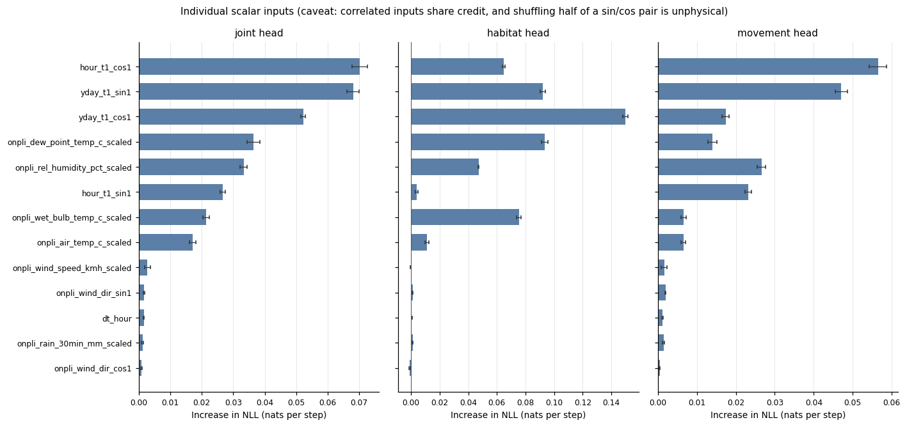
Median SD / |increase| across groups (repeat-to-repeat noise):
head
habitat 0.051
joint 0.049
movement 0.086
Which variables move each class’s selection most?
A cheap, class-specific complement: the standard deviation of each class’s 1-D partial dependence curve from the previous section (in-range grid values only). A flat curve means the variable barely changes how strongly the class is selected. The grids differ between variables, so compare the shading within a column more than across columns.
Show code
pdp_var = (in_range.groupby(["class", "variable"])["pd"].std() .unstack("variable").loc[PLOT_CLASSES, list(PDP_SPECS)])pdp_var.to_csv(STAGE4_DIR /"pdp_sd_importance.csv")fig, ax = plt.subplots(figsize=(9.5, 4.8))im = ax.imshow(pdp_var.to_numpy(), cmap="Blues", aspect="auto", vmin=0)ax.set_xticks(range(pdp_var.shape[1]), [c.replace("_", " ") for c in pdp_var.columns], rotation=30, ha="right")ax.set_yticks(range(pdp_var.shape[0]), [CLASS_LABELS[c] for c in pdp_var.index])vmax = pdp_var.to_numpy().max()for i inrange(pdp_var.shape[0]):for j inrange(pdp_var.shape[1]): v = pdp_var.iat[i, j] ax.text(j, i, f"{v:.2f}", ha="center", va="center", fontsize=7, color="white"if v >0.6* vmax else"#222222")ax.grid(False)fig.colorbar(im, ax=ax, label="SD of the PDP (log SR)")ax.set_title("PDP-variance importance: how much each variable moves each class's selection", fontsize=10)fig.tight_layout()fig.savefig(STAGE4_DIR /"pdp_sd_importance.png")plt.show()
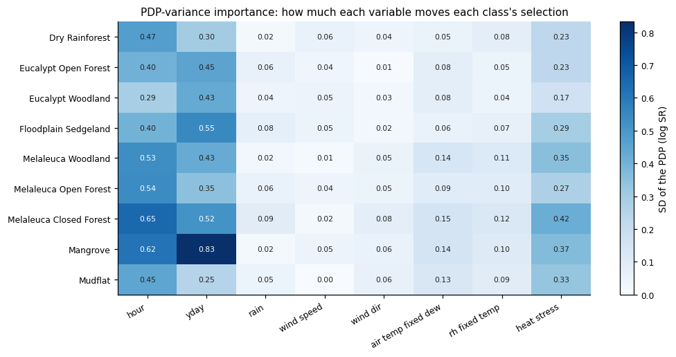
What the importance shows
Landcover is what the model relies on most (+0.11 nats per step in the joint NLL when shuffled), followed by time of day and day of year (≈ +0.08 each). The thermal group adds +0.02, DEM +0.01, wind and slope +0.005, and rain and dt_hour almost nothing. The baseline joint NLL on the sample (4.01) matches the checkpoint’s validation loss.
The two heads use time differently. The habitat surface depends on day of year (+0.14) far more than on time of day (+0.03). The movement kernel depends most on time of day (+0.06), then day of year (+0.05) and landcover (+0.04). The daily cycle acts mainly through how far pigs move; the seasonal cycle acts through where they go.
Weather acts mostly through movement. The thermal and wind groups have small positive importance for the movement and joint NLL, and slightly negative values for the habitat head on its own. The model was trained on the joint likelihood, so the habitat head’s stand-alone NLL is not what was optimised. The negative values mean only that these inputs don’t improve the habitat surface’s own fit.
Individually, the cosine of the hour (night vs day) and both day-of-year terms dominate. Among the thermal inputs, air temperature, RH and dew point each add about +0.01, a share of the group’s total, as expected for correlated inputs.
The rankings are stable: the SD over permutations is about 5 % of each increase.
By class (the heatmap above): day of year moves selection of mangrove, mudflat and floodplain the most; hour moves mangrove, mudflat and the melaleuca classes; heat stress is the most influential weather axis for mudflat, melaleuca closed forest and mangrove.
Movement kernel
How does the model’s next-step distribution change with time and weather, and with the landcover the pig starts in? Everything here is evaluated on real observed windows: the spatial context around observed fixes, with the observed (or modified) scalar inputs and the observed previous bearing. Summaries are computed exactly from the grid (deepssf.kernel_summary()), not by sampling steps:
expected step length, its SD and quantiles;
P(stay): the probability of staying in the centre cell (a step under 1 pixel);
the turning angle’s mean resultant length relative to the previous bearing (0 = no directional persistence, 1 = always straight on);
the mass in the window’s outer ring (if large, the 500 m window truncates the kernel).
Two kernels are summarised: - the movement kernel: the movement head alone, i.e. where the pig could go; - the joint next-step surface: habitat × movement, renormalised, i.e. where the model predicts it will go.
The habitat network zero-pads every convolution, so within a window the habitat surface is distorted in the outer habitat_edge_buffer(model) cells (8 here, one per habitat conv layer). deepssf.next_step_surfaces() leaves those cells out of the habitat and joint surfaces and renormalises over the remaining 35 × 35 cells (±340 m). The movement kernel is a parametric function of distance and bearing, with no padding artefacts, so it keeps the whole window. Landscape-scale maps already mask the same width at the raster edge.
deepssf.mixture_moments() also gives the untruncated gamma-mixture mean and the analytic von Mises resultant from the decoded parameters. These describe the same movement kernel on an unbounded plane. They differ from the grid values where the window truncates the kernel, and through discretisation to cells.
Show code
STAGE5_DIR = INFERENCE_DIR /"stage5"STAGE5_DIR.mkdir(parents=True, exist_ok=True)grid_block = model.movement_grid_outputDIST = grid_block.distance_layer # [D, D] metres from the centre cellBRG = grid_block.bearing_layer # [D, D] radians, 0 = east, anticlockwiseHALF = WINDOW_SIZE //2EDGE = deepssf.habitat_edge_buffer(model) # window cells distorted by zero-paddingUNIQUE_D, D_INDEX = torch.unique(DIST.reshape(-1), return_inverse=True) # sortedlandscape_dev = torch.stack(landscape).to(DEVICE)landcover_cmap = ListedColormap([CLASS_COLOURS[c] for c in CLASS_NAMES])class_dev = torch.from_numpy(class_rasters).to(DEVICE)# Starting-class groups (the melaleuca classes are pooled)START_GROUPS = {"Floodplain Sedgeland": ["veg_floodplain_sedgeland"],"Eucalypt Open Forest": ["veg_eucalypt_open_forest"],"Eucalypt Woodland": ["veg_eucalypt_woodland"],"Dry Rainforest": ["veg_dry_rainforest"],"Melaleuca (pooled)": ["veg_melaleuca_woodland", "veg_melaleuca_open_forest","veg_melaleuca_closed_forest"],}GROUP_COLOURS = {g: VEG_COLOURS[g] for g in START_GROUPS if g in VEG_COLOURS}GROUP_COLOURS["Melaleuca (pooled)"] = VEG_COLOURS["Melaleuca Open Forest"]class_to_group = {c: g for g, cs in START_GROUPS.items() for c in cs}step_df["start_group"] = step_df["start_class"].map(class_to_group)def target_pixels(steps):"""(col, row) of each step's next fix within its window, as MovementDataset does.""" c1, r1 =~raster_transform * (steps["x1_"].to_numpy(), steps["y1_"].to_numpy()) c2, r2 =~raster_transform * (steps["x2_"].to_numpy(), steps["y2_"].to_numpy()) col = np.floor(c2).astype(int) - np.floor(c1).astype(int) + HALF row = np.floor(r2).astype(int) - np.floor(r1).astype(int) + HALFreturn np.stack([col, row], axis=1)def kernel_table(steps, natural=None, batch_size=512, with_classes=False, pit=False, pmf=False):"""Movement and joint kernel summaries for each step's observed window. natural: natural-unit scalar rows aligned with `steps` (default: the steps' own). pit: add the randomised PIT of the observed step length under each kernel. pmf: also return the joint and movement kernels' distance PMFs [N, n_distances]. """ natural = steps if natural isNoneelse natural encoded_all = encoder.encode(natural[encoder.inputs]) targets_all = target_pixels(steps) if pit elseNone rng = np.random.default_rng(0) tables, pmfs = [], {"joint": [], "move": []}for i inrange(0, len(steps), batch_size): sl =slice(i, i + batch_size) xs, ys = steps["x1_"].to_numpy()[sl], steps["y1_"].to_numpy()[sl] spatial = deepssf.crop_windows(landscape_dev, xs, ys, raster_transform, WINDOW_SIZE) scal = torch.from_numpy(encoded_all[sl]).to(DEVICE) bear = torch.as_tensor(steps["bearing_tm1"].to_numpy()[sl], dtype=torch.float32, device=DEVICE)[:, None]# Joint surface without the habitat CNN's padded edge cells; movement whole surf = deepssf.next_step_surfaces(model, spatial, scal, bear, edge_buffer=EDGE) move, joint = surf["movement"], surf["joint"] cw =Noneif with_classes: cw = deepssf.crop_windows(class_dev, xs, ys, raster_transform, WINDOW_SIZE).clamp_min(0) parts = []for name, kern in (("move", move), ("joint", joint)): ks = deepssf.kernel_summary(kern, DIST, BRG, bear[:, 0], class_windows=cw, class_names=CLASS_NAMES, edge=0if name =="move"else EDGE)if pit or pmf: p = torch.softmax(kern.reshape(len(kern), -1), dim=1) dist_pmf = torch.zeros(len(kern), len(UNIQUE_D), device=DEVICE).index_add_(1, D_INDEX, p)if pmf: pmfs[name].append(dist_pmf.cpu().numpy())if pit: t = targets_all[sl] rank = D_INDEX.reshape(WINDOW_SIZE, WINDOW_SIZE)[t[:, 1], t[:, 0]].cpu().numpy() cdf = torch.cumsum(dist_pmf, dim=1).cpu().numpy() pm = dist_pmf.cpu().numpy() below = np.where(rank >0, cdf[np.arange(len(rank)), rank -1], 0.0) at = pm[np.arange(len(rank)), rank] ks["pit"] = below + rng.random(len(rank)) * at parts.append(ks.add_prefix(f"{name}_")) parts.append(deepssf.mixture_moments(deepssf.movement_parameters(model, spatial, scal))) tables.append(pd.concat(parts, axis=1)) table = pd.concat(tables, ignore_index=True) table.index = steps.indexif pmf:return table, {k: np.concatenate(v) for k, v in pmfs.items()}return tableprint(f"Window {WINDOW_SIZE} px; habitat/joint surfaces exclude the outer {EDGE} cells; "f"{len(UNIQUE_D)} distinct cell distances; "f"start groups: {step_df['start_group'].value_counts().to_dict()}")
Calibration: does the kernel match the observed steps?
Checked on a fixed sample of 5,000 observed steps before interpreting anything else:
Step length by hour. The model’s expected step length (movement-only and joint), averaged over the steps in each hour, against the observed mean and median step length (sl_). The model’s median is the median of the steps’ pooled distance distributions.
Randomised PIT of the observed step lengths. For each step, take the kernel’s probability of a shorter step plus a uniform random share of the probability at exactly the observed cell distance. If the kernel’s step-length distribution is right, these values are uniform on [0, 1]. A U-shape means the kernel is too narrow; a hump means it is too wide; a slope means a bias.
Next-step landcover. The joint kernel’s average probability of each class for the next step, against the observed share of next steps in each class.
Show code
N_CAL =5000cal_steps = step_df.sample(N_CAL, random_state=11)cal_result = cached("calibration", {"steps": cal_steps.index.tolist(), "edge": EDGE},lambda: (lambda t_p: {"table": t_p[0].reset_index(names="step"),"pmf_joint": pd.DataFrame(t_p[1]["joint"]),"pmf_move": pd.DataFrame(t_p[1]["move"])})( kernel_table(cal_steps, with_classes=True, pit=True, pmf=True)), n_maps=N_CAL, directory=STAGE5_DIR, unit="windows",)cal = cal_result["table"].set_index("step").loc[cal_steps.index]pmf_joint = cal_result["pmf_joint"].to_numpy()pmf_move = cal_result["pmf_move"].to_numpy()unique_d = UNIQUE_D.cpu().numpy()cal["hour_bin"] = np.floor(cal_steps["hour_t1"]).astype(int).to_numpy()cal["sl_"] = cal_steps["sl_"].to_numpy()def pooled_median(pmf_rows): cdf = np.cumsum(pmf_rows.mean(axis=0))return unique_d[np.searchsorted(cdf, 0.5)]by_hour = cal.groupby("hour_bin").agg( observed_mean=("sl_", "mean"), observed_median=("sl_", "median"), joint_mean=("joint_expected_distance", "mean"), move_mean=("move_expected_distance", "mean"), n=("sl_", "size"))by_hour["joint_median"] = [pooled_median(pmf_joint[(cal["hour_bin"] == h).to_numpy()])for h in by_hour.index]by_hour.to_csv(STAGE5_DIR /"calibration_step_length_by_hour.csv")print(by_hour.round(1).to_string())print(f"\nOverall: observed mean {cal['sl_'].mean():.1f} m, joint {cal['joint_expected_distance'].mean():.1f} m, "f"movement-only {cal['move_expected_distance'].mean():.1f} m; untruncated gamma mixture "f"{cal['gamma_mean'].mean():.1f} m; mean outer-ring mass (movement) "f"{cal['move_outer_ring_mass'].mean():.3f}")
# Next-step landcover: predicted (joint kernel) vs observedc2, r2 =~raster_transform * (cal_steps["x2_"].to_numpy(), cal_steps["y2_"].to_numpy())next_class = np.asarray(CLASS_NAMES)[ class_rasters[:, np.floor(r2).astype(int), np.floor(c2).astype(int)].argmax(axis=0)]next_class_cal = pd.DataFrame({"label": [CLASS_LABELS[c] for c in CLASS_ORDER],"observed_next": [(next_class == c).mean() for c in CLASS_ORDER],"predicted_joint": [cal[f"joint_p_{c}"].mean() for c in CLASS_ORDER],"predicted_movement_only": [cal[f"move_p_{c}"].mean() for c in CLASS_ORDER],}, index=pd.Index(CLASS_ORDER, name="class"))next_class_cal.to_csv(STAGE5_DIR /"calibration_next_step_class.csv")print("Share of next steps in each class (5,000 observed steps):")print(next_class_cal.round(4).to_string())
Share of next steps in each class (5,000 observed steps):
label observed_next predicted_joint predicted_movement_only
class
veg_dry_rainforest Dry Rainforest 0.1726 0.1767 0.1422
veg_eucalypt_open_forest Eucalypt Open Forest 0.2384 0.2358 0.2491
veg_eucalypt_woodland Eucalypt Woodland 0.0820 0.0848 0.0872
veg_floodplain_sedgeland Floodplain Sedgeland 0.3524 0.3504 0.3656
veg_melaleuca_woodland Melaleuca Woodland 0.0454 0.0436 0.0400
veg_melaleuca_open_forest Melaleuca Open Forest 0.0416 0.0386 0.0394
veg_melaleuca_closed_forest Melaleuca Closed Forest 0.0478 0.0467 0.0523
veg_mangrove Mangrove 0.0058 0.0068 0.0068
veg_mudflat Mudflat 0.0140 0.0166 0.0175
veg_water Water 0.0000 0.0000 0.0000
Movement partial dependence by starting class
For 60 observed windows per starting class, one scalar input is changed at a time (linked weather variables change consistently, as for habitat), and the movement kernel is summarised. Lines are the mean over the 60 windows (the PDP); bands are their interquartile range (the spread of the ICE curves). dt_hour = 0.5 h.
Computing (or loading) movement partial dependence:
move_pdp_hour: 7,200 windows in 4 s (0.6 ms each)
move_pdp_yday: 3,600 windows in 1 s (0.4 ms each)
move_pdp_rain: 1,500 windows in 1 s (0.4 ms each)
move_pdp_wind_speed: 2,100 windows in 1 s (0.4 ms each)
move_pdp_air_temp_fixed_dew: 2,700 windows in 1 s (0.4 ms each)
move_pdp_rh_fixed_temp: 2,400 windows in 1 s (0.4 ms each)
move_pdp_heat_stress: 3,300 windows in 1 s (0.4 ms each)
Show code
MOVE_METRICS = {"move_expected_distance": "Expected step length (m)","move_p_stay": "P(stay in the same cell)","move_turn_resultant": "Turning resultant length (0–1)",}for metric, metric_label in MOVE_METRICS.items(): fig, axes = plt.subplots(2, 4, figsize=(15, 6.5), sharey=True)for ax, (name, (_, _, xlabel)) inzip(axes.ravel(), MOVE_PDP_SPECS.items()): ice = move_pdp[name]for group in START_GROUPS: g = ice[ice["start_group"] == group].groupby("value")[metric] mean, q1, q3 = g.mean(), g.quantile(0.25), g.quantile(0.75) ax.fill_between(mean.index, q1, q3, color=GROUP_COLOURS[group], alpha=0.15, lw=0) ax.plot(mean.index, mean, color=GROUP_COLOURS[group], lw=2, label=group, path_effects=[pe.Stroke(linewidth=3.2, foreground="#4d4d4d"), pe.Normal()])if name =="hour":for s_h in (SUNRISE_H, SUNSET_H): ax.axvline(s_h, color="#d08c00", lw=0.9, ls=":") ax.set(xlabel=xlabel) axes[0, 0].set_ylabel(metric_label) axes[1, 0].set_ylabel(metric_label) axes[1, -1].axis("off") axes[1, -1].legend(*axes[0, 0].get_legend_handles_labels(), loc="center", title="Starting class") fig.suptitle(f"Movement kernel: {metric_label.lower()} — PDP over 60 observed windows per ""starting class (bands: interquartile range of the ICE curves)", fontsize=10) fig.tight_layout() fig.savefig(STAGE5_DIR /f"move_pdp_{metric}.png") plt.show()
move_pdp2_hour_x_heat: 21,600 windows in 8 s (0.4 ms each)
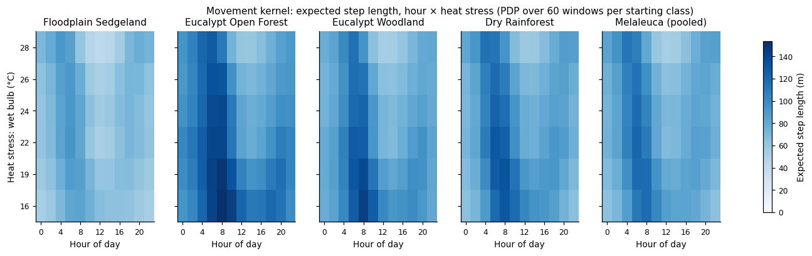
Where does the next step go?
The joint kernel’s probability that the next step lands in each landcover class, against the hour of day and heat stress, for each starting class (the same 60 windows per class). This combines where the pig could go (movement) with where it prefers to go (habitat), within the classes actually around it.
Show code
fig, axes = plt.subplots(2, len(START_GROUPS), figsize=(17, 6.5), sharey="row")for row, name inenumerate(["hour", "heat_stress"]): ice = move_pdp[name]for ax, group inzip(axes[row], START_GROUPS): sub = ice[ice["start_group"] == group].groupby("value")for cls in PLOT_CLASSES: prob = sub[f"joint_p_{cls}"].mean()if prob.max() <0.01:continue ax.plot(prob.index, prob, color=CLASS_COLOURS[cls], lw=1.8, label=CLASS_LABELS[cls], path_effects=[pe.Stroke(linewidth=3, foreground="#4d4d4d"), pe.Normal()]) ax.set(xlabel=MOVE_PDP_SPECS[name][2])if row ==0: ax.set_title(f"Starting in {group}") axes[row, 0].set_ylabel("P(next step in class)")handles = {}for ax in axes.ravel():for hnd, lab inzip(*ax.get_legend_handles_labels()): handles.setdefault(lab, hnd)order = [CLASS_LABELS[c] for c in PLOT_CLASSES if CLASS_LABELS[c] in handles]fig.legend([handles[l] for l in order], order, loc="center right", title="Next-step class")fig.suptitle("Next-step landcover under the joint kernel (classes reaching 1 % shown)", fontsize=10)fig.tight_layout(rect=(0, 0, 0.88, 1))fig.savefig(STAGE5_DIR /"next_step_class_by_start.png")plt.show()
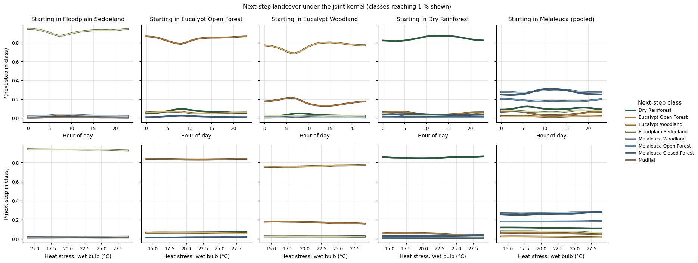
Example kernels: floodplain, cool morning vs hot afternoon
One observed window starting in floodplain sedgeland, with two scenarios: 06:00 in cool, dry weather (wet bulb 18 °C) and 15:00 in hot, humid weather (wet bulb 27.5 °C), each with the typical temperature and humidity for that wet bulb. The first four columns show the window’s landcover and the habitat, movement and joint surfaces (log-probability; north up; the habitat and joint surfaces leave out the padded edge cells). The last column compares the joint and movement kernels’ step-length densities (exact, from the grid) with the observed step lengths of floodplain steps in similar conditions (±2 h, ±1.5 °C wet bulb).
# Tidy CSVs of the movement PDPs (means and IQR by start group, variable and value)move_pdp_summary = pd.concat([ ice.groupby(["start_group", "value"])[list(MOVE_METRICS) + [f"joint_p_{c}"for c in CLASS_NAMES]] .mean().reset_index().assign(variable=name)for name, ice in move_pdp.items()])move_pdp_summary.to_csv(STAGE5_DIR /"move_pdp_summary.csv", index=False)rng_tab = (move_pdp_summary.groupby(["start_group", "variable"])["move_expected_distance"] .agg(lambda s: s.max() - s.min()).unstack("variable")[list(MOVE_PDP_SPECS)])print("Range of expected step length (m) across each variable's grid, by starting class:")print(rng_tab.round(0).to_string())
Calibration first. - The model’s mean step length by hour follows the observed diel cycle: a dawn peak (observed ≈ 90 m at 05:00–07:00) and a midday low (≈ 40 m). Overall, the movement kernel alone gives 68 m and the joint kernel 57 m, against 61 m observed. The joint kernel leaves out the habitat surface’s padded edge cells, so it cannot place a step more than 340 m out along either axis. 2 % of observed steps go that far, which is why it sits a little low, most of all at the dawn peak (≈ 80 m vs 91 m). - The model’s pooled median moves in grid steps (20, 28, 40 m) and sits a little above the observed median, so very short steps are slightly under-predicted. - The PIT histograms have a mild central hump (central deciles 0.12–0.135 vs the uniform 0.10), so the kernel is a little too wide. The joint PIT’s top decile (0.11) is raised by the same 2 % of long steps. - Next-step landcover is very well calibrated. The joint kernel’s predicted shares match the observed next-step classes to within about 0.5 percentage points for every class, e.g. mudflat 1.9 % predicted vs 1.7 % observed. So the habitat surface’s apparent liking for mudflat at the landscape scale (in the landcover selection section) does not carry through to predicted steps once movement is included.
Grid vs untruncated kernel. The decoded gamma mixture has a mean of about 30 m, but the grid kernel’s expected step is about 68 m, and the window truncates almost nothing (outer-ring mass 0.002). The difference is discretisation. The fitted gamma puts much of its mass within 10 m (inside the centre cell), but the grid evaluates the density only at cell centres (7.6 m for the centre cell, 20 m for its neighbours) and then renormalises, which moves that mass outwards. The model was fitted, and is used, on the grid, so the grid summaries are the ones to interpret; the decoded gamma parameters are not step-length distributions in their own right.
Effects on movement. - Hour is by far the strongest. Expected steps peak at dawn (05:00–07:00) and are shortest around midday, for every starting class: a range of 26 m (floodplain) to 65 m (eucalypt open forest). P(stay) is lowest at dawn (≈ 0.21) and highest at midday (≈ 0.33). Directional persistence is weak throughout (turning resultant < 0.1) and is highest at dawn. - Season: steps are longest in the build-up and early wet season (October–December) and shortest mid-dry season (around July). - Weather effects are modest: - stronger wind shortens steps (by 10–25 m from calm to 30 km/h); - heavy rain shortens them a little; - higher temperature at a fixed dew point shortens steps from melaleuca and dry rainforest (by up to ≈ 28 m); - humidity and the heat-stress axis change expected steps by less than 15 m. - The starting class matters as much as the conditions. Pigs starting in eucalypt open forest or woodland take the longest steps, and those on the floodplain the shortest. - Where the next step goes: pigs mostly stay in the class they are in (P ≈ 0.75–0.93). The exception is the pooled melaleuca classes, which are interleaved with each other and with dry rainforest. Moves from eucalypt woodland into eucalypt open forest, and from floodplain into melaleuca, peak around dawn, when steps are longest.
Files for the app
The interactive app (apps/habitat_selection_app.py, see apps/README.md) recomputes habitat-selection maps for any time and weather. It needs a few things from this notebook, saved next to the checkpoint: the paths and window size, the availability mask, and (already saved above) the scalar spec and the wet bulb correction.
Show code
MASK_PATH = INFERENCE_DIR /"availability_mask.npy"np.save(MASK_PATH, avail_mask)app_config = {"checkpoint": CKPT_PATH.name, # relative to OUTPUT_DIR"scalar_spec": SPEC_PATH.relative_to(OUTPUT_DIR).as_posix(),"wet_bulb_correction": WET_BULB_CORRECTION_PATH.relative_to(OUTPUT_DIR).as_posix(),"availability_mask": MASK_PATH.relative_to(OUTPUT_DIR).as_posix(),"window_size": WINDOW_SIZE,"pixel_size": PIXEL_SIZE,"layer_paths": LAYER_PATHS, # relative to the repo"csv_path": CSV_PATH.as_posix(),"class_layer": "landcover","class_names": CLASS_NAMES,}(INFERENCE_DIR /"app_config.json").write_text(json.dumps(app_config, indent=2) +"\n")print(json.dumps(app_config, indent=2))
The website can’t run the model, so the habitat explorer page (deepssf_habitat_explorer.qmd) shows precomputed maps for a grid of presets:
every hour of the day (on the hour);
four seasons, at a representative mid-month day: early dry (June, day 166), late dry (September, day 258), early wet / build-up (December, day 349) and late wet (February, day 46);
four weather presets, each a real observed half-hour from that season (same month) within ±1 h of that hour:
cool & dry: the row nearest the 10th percentile of wet bulb, among rows with no rain;
typical: the row nearest the median of all six weather variables, in SD units;
hot & humid: the row nearest the 90th percentile of wet bulb, among rows with no rain;
rain: the row with the median rain amount among rows with rain. It is left out where no rain was recorded.
Every map uses one fixed colour scale, so presets can be compared directly. The maps are restricted to the availability mask and warped to Web Mercator, the projection Leaflet expects, as add_heatmap_overlay() does. Each is written as WebP (quality 90, lossless transparency): about 58 kB a map against 187 kB for an indexed PNG, which keeps the whole grid inside the ~30 MB budget. apps/habitat_explorer.html is the page; it is copied next to the images and manifest.json in OUTPUT_DIR / "web".
Show code
import shutilfrom matplotlib import colormapsfrom PIL import Imagefrom rasterio.transform import array_boundsfrom rasterio.warp import Resampling, calculate_default_transform, reproject, transform_boundsWEB_DIR = OUTPUT_DIR /"web"OVERLAY_DIR = WEB_DIR /"overlays"OVERLAY_DIR.mkdir(parents=True, exist_ok=True)SEASONS = { # key: (label, month, representative day of year)"early_dry": ("Early dry (June)", 6, 166),"late_dry": ("Late dry (September)", 9, 258),"early_wet": ("Early wet / build-up (December)", 12, 349),"late_wet": ("Late wet (February)", 2, 46),}WEATHER_PRESETS = {"cool_dry": "Cool & dry", "typical": "Typical", "hot_humid": "Hot & humid","rain": "Rain"}HOURS =list(range(24))month = step_df["t1_"].dt.monthweather_scale = step_df[WEATHER_COLS].std()def pick_presets(rows):"""The observed rows used as weather presets for one season × hour.""" dry = rows[rows["onpli_rain_30min_mm"] ==0] wet = rows[rows["onpli_rain_30min_mm"] >0] out = {}iflen(dry): wb = dry["onpli_wet_bulb_temp_c"] out["cool_dry"] = dry.loc[(wb - wb.quantile(0.1)).abs().idxmin()] out["hot_humid"] = dry.loc[(wb - wb.quantile(0.9)).abs().idxmin()] z = ((rows[WEATHER_COLS] - rows[WEATHER_COLS].median()) / weather_scale).pow(2).sum(axis=1) out["typical"] = rows.loc[z.idxmin()]iflen(wet): rain = wet["onpli_rain_30min_mm"] out["rain"] = wet.loc[(rain - rain.median()).abs().idxmin()]return {k: out[k] for k in WEATHER_PRESETS if k in out}preset_rows = []for season, (label, month_no, yday) in SEASONS.items(): in_season = step_df[month == month_no]for hour in HOURS: hour_diff = ((in_season["hour_t1"] - hour +12) %24-12).abs() candidates = in_season[hour_diff <=1]for weather, row in pick_presets(candidates).items(): preset_rows.append({"hour": hour, "season": season, "weather": weather, "source_step": row.name,"source_time": row["t1_"], "hour_t1": float(hour), "yday_t1": float(yday),"dt_hour": 0.5, **{c: float(row[c]) for c in WEATHER_COLS + [WIND_DIR_COL]}, })presets = pd.DataFrame(preset_rows)counts = presets.groupby(["season", "weather"]).size().unstack(fill_value=0)print(f"{len(presets)} presets (of {len(HOURS) *len(SEASONS) *len(WEATHER_PRESETS)} possible):")print(counts.to_string())print("Out of range:", encoder.check_ranges(presets) or"none")
# Surfaces for every preset, then one colour scale for all of thempreset_surfaces = mask_predictor.predict(encoder.encode(presets), batch_size=PD_BATCH)valid_values = preset_surfaces[:, mask_predictor.valid]COLOUR_LO, COLOUR_HI = np.percentile(valid_values, [2, 99.8])print(f"{len(preset_surfaces)} surfaces; fixed colour scale {COLOUR_LO:.2f} to {COLOUR_HI:.2f} ""(log-probability per cell; 2nd–99.8th percentile over all presets)")preset_selection = deepssf.class_selection( torch.from_numpy(preset_surfaces).to(DEVICE), class_crop, CLASS_NAMES)log_sr_wide = preset_selection.pivot(index="scenario", columns="class", values="log_sr")# Web Mercator grid for the masked crop (as add_heatmap_overlay does)src_transform = mask_predictor.crop_transform(raster_transform)h_src, w_src = mask_predictor.shapedst_transform, w_dst, h_dst = calculate_default_transform("EPSG:3112", "EPSG:3857", w_src, h_src, *array_bounds(h_src, w_src, src_transform))west, south, east, north = transform_bounds("EPSG:3857", "EPSG:4326", *array_bounds(h_dst, w_dst, dst_transform))viridis = colormaps["viridis"]def write_overlay(surface, path): warped = np.full((h_dst, w_dst), np.nan, dtype=np.float32) reproject(surface.astype(np.float32), warped, src_transform=src_transform, src_crs="EPSG:3112", dst_transform=dst_transform, dst_crs="EPSG:3857", resampling=Resampling.nearest, src_nodata=np.nan, dst_nodata=np.nan) rgba = viridis(np.clip((warped - COLOUR_LO) / (COLOUR_HI - COLOUR_LO), 0, 1), bytes=True) rgba[..., 3] = np.where(np.isfinite(warped), 215, 0) # ~85 % opaque; transparent outside Image.fromarray(rgba).save(path, format="WEBP", quality=90, method=6, alpha_quality=100)presets["file"] = [f"overlays/h{p['hour']:02d}_{p['season']}_{p['weather']}.webp"for _, p in presets.iterrows()]# WebP encoding takes a few minutes, so reuse the images if nothing they depend on changedoverlay_key = json.dumps({"presets": presets.drop(columns=["source_time"]).round(6).values.tolist(),"colour": [round(float(COLOUR_LO), 6), round(float(COLOUR_HI), 6)],"checkpoint": CHECKPOINT_ID, "encoder": ENCODER_ID, "format": "webp-q90-a215",}, default=str)overlay_key_path = WEB_DIR /"overlays.key.json"up_to_date = (not RECOMPUTE and overlay_key_path.exists()and overlay_key_path.read_text() == overlay_keyandall((WEB_DIR / f).exists() for f in presets["file"]))if up_to_date:print("Overlays are up to date; not rewritten (set RECOMPUTE = True to force)")else: t0 = time.perf_counter()for i, p in presets.iterrows(): # overwrite in place (deleting first upsets iCloud sync) write_overlay(preset_surfaces[i], WEB_DIR / p["file"]) overlay_key_path.write_text(overlay_key)print(f"Wrote {len(presets)} overlays in {time.perf_counter() - t0:.0f} s")# This cell owns the folder: remove anything not in the current preset list (earlier# runs, or sync-conflict copies such as "name 2.webp"), so Quarto doesn't publish itcurrent = {Path(f).name for f in presets["file"]}stale = [f for f in OVERLAY_DIR.iterdir() if f.is_file() and f.name notin current]for f in stale: f.unlink()if stale:print(f"Removed {len(stale)} stale file(s) from {OVERLAY_DIR}")sizes = np.array([(WEB_DIR / f).stat().st_size for f in presets["file"]])print(f"{len(sizes)} overlays ({w_dst} × {h_dst} px): {sizes.sum() /1e6:.1f} MB in total, "f"{sizes.mean() /1e3:.0f} kB each on average")
347 surfaces; fixed colour scale -16.46 to -11.28 (log-probability per cell; 2nd–99.8th percentile over all presets)
Wrote 347 overlays in 409 s
347 overlays (1530 × 1163 px): 31.3 MB in total, 90 kB each on average
Show code
def fmt(v, unit, digits=1):returnf"{v:.{digits}f}{unit}".strip()def inputs_table(p): calm = p["onpli_wind_speed_kmh"] ==0return {"Hour": f"{int(p['hour']):02d}:00","Day of year": f"{int(p['yday_t1'])}","Air temperature": fmt(p["onpli_air_temp_c"], "°C"),"Relative humidity": fmt(p["onpli_rel_humidity_pct"], "%", 0),"Wet bulb": fmt(p["onpli_wet_bulb_temp_c"], "°C"),"Dew point": fmt(p["onpli_dew_point_temp_c"], "°C"),"Rain (30 min)": fmt(p["onpli_rain_30min_mm"], "mm"),"Wind": "calm"if calm elsef"{p['onpli_wind_speed_kmh']:.1f} km/h from {p[WIND_DIR_COL]:.0f}°", }stops = [colormaps["viridis"](x) for x in np.linspace(0, 1, 9)]manifest = {"title": "Feral pig habitat selection explorer","run": OUTPUT_DIR.name,"bounds": [[south, west], [north, east]],"colour": {"stops": ["#%02x%02x%02x"%tuple(int(255* c) for c in s[:3]) for s in stops],"low": float(COLOUR_LO), "high": float(COLOUR_HI),"low_label": "less selected", "high_label": "more selected"},"log_sr_limit": 2.0,"classes": [{"name": c, "label": CLASS_LABELS[c], "colour": CLASS_COLOURS[c],"plot": c !="veg_water"} for c in CLASS_ORDER],"dimensions": [ {"key": "hour", "label": "Hour of day (Darwin)", "slider": True, "default": 9,"values": [{"value": h, "label": f"{h:02d}:00"} for h in HOURS]}, {"key": "season", "label": "Season", "default": "late_dry","values": [{"value": k, "label": v[0]} for k, v in SEASONS.items()]}, {"key": "weather", "label": "Weather", "default": "typical","values": [{"value": k, "label": v} for k, v in WEATHER_PRESETS.items()]}, ],"presets": [ {"hour": int(p["hour"]), "season": p["season"], "weather": p["weather"], "file": p["file"],"inputs": inputs_table(p),"source": f"Weather observed at {p['source_time']:%Y-%m-%d %H:%M} (Darwin time).","log_sr": {c: (Noneifnot np.isfinite(v) elseround(float(v), 3))for c, v in log_sr_wide.loc[i, CLASS_ORDER].items()}}for i, p in presets.iterrows() ],}(WEB_DIR /"manifest.json").write_text(json.dumps(manifest, ensure_ascii=False) +"\n")shutil.copy("apps/habitat_explorer.html", WEB_DIR /"habitat_explorer.html")presets.drop(columns="file").to_csv(WEB_DIR /"presets.csv", index=False)total =sum(f.stat().st_size for f in WEB_DIR.rglob("*") if f.is_file())print(f"Web assets in {WEB_DIR}: {total /1e6:.1f} MB (budget ~30 MB)")
Web assets in outputs/landcover/2026-11-18_2/web: 31.7 MB (budget ~30 MB)
Signer, Johannes, John Fieberg, and Tal Avgar. 2019. “Animal movement tools (amt): R package for managing tracking data and conducting habitat selection analyses.”Ecology and Evolution 9 (January): 880–90. https://doi.org/10.1002/ece3.4823.
![]()